锡拉库萨·Deinomenid 僭主 四德拉克马
SICILY · Syracuse · Deinomenid Tyranny
📜 历史背景
Deinomenid 四兄弟(Gelon、Hieron、Thrasybulus、Polyzelus)于 BC 485 年建立僭主统治,Syracuse 由此跃升为西地中海最强希腊城邦。BC 480 年希梅拉战役(Himera)-- Gelon 联合 Akragas 城大败迦太基,古典作家希罗多德将其与同年的萨拉米斯海战并列为希腊人东西方战略的标志性胜利。四马战车(Quadriga)向右疾驰、Nike 飞降加冕,直接象征此类军事胜利与神圣赐福。背面 Arethusa 头像被四只海豚环绕--海豚是 Syracuse 延续数百年的城徽,寓意城市被海洋拥抱的地理与文化双重身份。此币属 Boehringer 115 标准版式,代表古典西西里艺术巅峰的前夜。
再递 Numismatik Naumann · 2025

埃及·尼禄四德拉克马
EGYPT · Alexandria · Nero
📜 历史背景
亚历山大造币厂是罗马帝国内最特殊的货币发行地--奥古斯都征服托勒密埃及后,刻意保留其希腊化造币传统,以希腊铭文和神祇为主图,与拉丁传统形成鲜明对比。从提比略起,行省埃及币每位皇帝均有铸造,且每年更换纪年版式。此枚为尼禄第14年(L IΔ = RY 14 = AD 67/68),对应其希腊巡游期间。尼禄辐射冠头像左向,强调皇帝与太阳神的联系--尼禄晚年尤其致力建构「太阳神」身份。肩披 Aegis 原为雅典娜护胸甲,被罗马皇帝借用以象征神佑(divine protection)。背面天后赫拉(Hera)戴冠披巾头像右向,延续希腊化时代亚历山大对城市守护神的崇拜传统。

本都·阿米索斯 珀尔修斯 / 飞马铜币
PONTUS · Amisos · Mithradates VI Eupator
📜 历史背景
本都(Pontus)是黑海南岸的希腊化王国,以阿米索斯(Amisos,今土耳其Samsun)为重要造币与商业中心。米特拉达梯六世(Mithradates VI Eupator,约 120-63 BC)是本都最伟大的国王,史称"米特拉达梯大帝"--先后三次发动对罗马的战争(前 88-前 63 年"米特拉达梯战争"),一度征服小亚细亚、希腊和爱琴海诸岛,几乎推翻罗马在东方的霸权。最终被庞培击败,逃往克里米亚后自杀。
此币的珀尔修斯戴弗里吉亚帽(Pileus / Phrygian cap)形象有强烈的政治神话含义:米特拉达梯王室自诩为希腊英雄珀尔修斯(斩杀美杜莎、救赎安德洛墨达)后裔--珀尔修斯之子Perses被认为波斯与本都王族的始祖。弗里吉亚帽在希腊罗马语境中象征自由,而帽上的狮鹫装饰(griffin-crest)则呼应波斯/东方传统,体现米特拉达梯横跨东西方的统治合法性。
背面的飞马 Pegasus是阿米索斯建城神话的核心元素(飞马用蹄踢出 Hippene 泉),也是该城数百年来的固定币面主题。这枚铜币是希腊化王国政治宣传与地方传统结合的典型样本。

埃及·尼禄四德拉克马
EGYPT · Alexandria · Nero (RY 14)
📜 历史背景
罗马行省埃及是帝国内唯一被奥古斯都禁止铸造"皇帝肖像"和"拉丁铭文"的行省--奥古斯都征服托勒密埃及后,刻意保留当地希腊传统以安抚亚历山大里亚民众。亚历山大造币厂沿袭希腊化传统,以希腊铭文和神祇为主图,且每年更换版式。年份标记 L IΔ 采用"奥古斯都纪年+皇帝在位年"双轨制,即奥古斯都纪年 14 + 尼禄 RY 14 = 公元 67/68 年。 背面 AKTIOΣ AΠOΛΛΩN(阿克提乌斯·阿波罗)是奥古斯都纪念公元前 31 年阿克提乌姆海战击败安东尼与克娄巴特拉的神祇。尼禄 RY 14(67 AD)正值其希腊巡游期间、宣布"希腊自由"的同一年,埃及币上仍延续这一图式,反映出罗马对行省货币传统的政治延续性。 关于"BI":Billon 是含银量仅约 18-25% 的银铜合金。罗马政府有意降低埃及币成色以遏制贵金属外流--罗马本土的"银币"(denarius)含银量约 80%,而埃及四德拉克马只值其 1/3 不到。这使行省埃及币成为研究罗马经济分层的独特样本。

安东尼·庇护 塞斯特提乌斯(LIBERTAS COS IIII)
ROMA · Antoninus Pius · AD 145-161
📜 历史背景
安东尼·庇护(Antoninus Pius,138-161 AD)是罗马帝国"五贤帝"的第四位,以和平、不扩张、重法律著称。此币发行于其统治晚期(TR P XVIII = AD 155/6),距罗马大火已约 11 年(64 AD 尼禄时期),距哈德良长城建成约 20 年(约 142 AD)。 LIBERTAS(自由女神)是五贤帝时期反复出现的主题:自由女神站立,左手持自由帽(pileus),右手持"vindicta"(liberty rod 自由权杖)。这个组合源自罗马解放奴隶仪式(manumissio):主人用权杖触奴隶头,宣布"hunc hominem liberum esse volo"(我愿此人自由),奴隶戴上自由帽。 五贤帝刻意铸造 LIBERTAS 主题,意在强调元老院与皇帝共治的"共和表象"--虽然实行帝制,但理论上"罗马公民自由"仍在。安东尼·庇护尤其重视此意象,因为其继位未经内战,强调"合法继承"与"恢复自由"是政治需要。 背面铭文 LIBERTAS COS IIII 中 COS IIII = 第四次执政官(约 AD 145),S-C 分别立于左右(Senatus Consulto = 元老院决议)。

埃及·尼禄等亚历山大四德拉克马(批量×9)
ROMAN EGYPT · Alexandria · Nero & Others ×9
🏛️ Lot详情
Numismatik Naumann Auction 154 批量Lot,包含9枚亚历山大造币厂Billon Tetradrachm,主要涵盖尼禄时期及同时代其他皇帝。正面多位皇帝肖像(含NEPΩN KΛAY KAIΣ ΣEB ΓEP等多版式),背面鹰立持权杖、L年份标记等典型亚历山大类型。部分带Aegis争议细节。

腓力二世 宙斯头像四德拉克马
MACEDON · Amphipolis · Philip II (359-336 BC)
📜 历史背景
亚历山大大帝之父腓力二世--马其顿王国奠基者,公元前338年喀罗尼亚战役确立希腊霸权。安菲波利斯造币厂是其在位期间最重要的铸币中心,币面宙斯月桂冠头像为古希腊钱币肖像艺术巅峰。背面青年骑手手持棕榈枝纪念腓力公元前356年奥运会马赛冠军--当届马其顿首次参赛即夺金,是其政治生涯的重要象征。马下双控制标记(controls):海豚(ΔΕΛΦΙΣ delphis)= 安菲波利斯海港城市标志,pellet-in-Π = 特定年版或印模组的官方标识。Le Rider pl. 46, 19 将此版式归入腓力二世"Group C"晚期安菲波利斯币。NGC 6636427-001 认证,GVF 品相。
落槌 Numismatik Naumann · Auction 161 · 2025

吕西马科斯 Lampsakos 四德拉克马
GREECE · Hellenistic · Lysimachos (BC 297-281)
📜 历史背景
吕西马科斯(Lysimachos,BC 360-281)是亚历山大大帝的六位近身侍卫(Somatophylax)之一,于BC 306/305年在色雷斯自立为王,建都莱普提昂杜斯(Lysimotelia),随后在其治下的色雷斯及小亚细亚地区大规模铸造四德拉克马金币。Lampsakos(兰普萨科斯)位于达达尼尔海峡入口,是吕西马科斯王国最重要的造币中心之一,掌控着从本都-潘提卡彭至爱琴海的贵金属流通命脉。
吕西马科斯四德拉克马正面沿用经典的亚历山大阿蒙之角(Ammon Horn)形象--这一肖像自BC 336年起便随亚历山大的军事扩张流通于整个希腊化世界,是最早、最具辨识度的希腊化君主肖像。亚历山大通过宣称自己是埃及阿蒙神之子(Jupiter Ammon)来建构其神性血统,吕西马科斯沿用这一肖像,既是政治宣传,也是对亚历山大开创的希腊化君主制iconography(肖像体系)的直接继承。
背面雅典娜·阿尔基德莫斯(Athena Alkidemos)是马其顿及亚历山大继承者们偏爱的战神形象--手持阿尔基(Alche,阿克顿的神盾)和矛,身披盔甲配狮皮头盔。Lampsakos造币厂以ΑΘΗΝΑΣ作为控制标记(control mark),用于区分不同批次和工匠。吕西马科斯四德拉克马是希腊化时期发行量最大、流通最广的硬币版式之一。
Solidus Numismatik(前,德国)
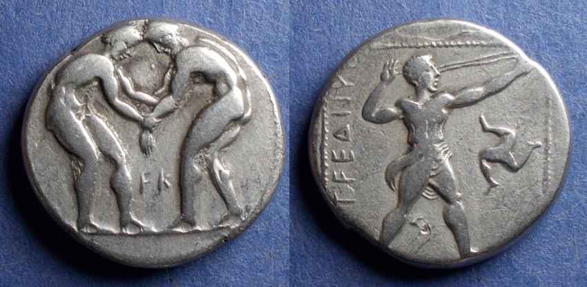
阿斯潘多斯 银质斯塔特
GREECE · Pamphylia · Aspendos (BC 380-325)
📜 历史背景
阿斯潘多斯(Aspendos)是潘菲利亚(Pamphylia)地区最重要的希腊殖民城市之一,位于欧里梅顿河(Eurymedon)入海口附近。该城在公元前 5 世纪波斯统治时期及随后的希腊化时期始终保持高度自治权,其独特的货币体系在整个安纳托利亚南部具有代表性。
阿斯潘多斯银币正面描绘两名摔跤手(wrestlers)正在进行角力比赛--这是古希腊体育竞技(pankration 或 wrestling)的经典题材,可能与当地举办的运动赛事或狄奥斯库里(Dockeroi)的神话典故有关。两摔跤手之间的 "FK" 是造币厂缩写或工匠标记。
背面描绘一名投石手(slinger)向右行走,正准备发射投石弹丸(bullet)。投石兵是安纳托利亚南部轻装步兵的典型代表,该形象可能与当地军事传统或赫拉克勒斯使用投石带的神话主题有关。三曲腿图(triskeles)是阿斯潘多斯币的典型辅助符号。铭文 "EΣTFEΔΙΙΥΣ" 是阿斯潘多斯(Aspendos)的希腊语城市名,置于颗粒方框(pellet square)内是潘菲利亚地区造币的典型边框设计。SNG France 103 将该版式归为阿斯潘多斯古典晚期(约 BC 380-325)标准银币。币面投石手下方有小凹痕(small ding below slinger)。
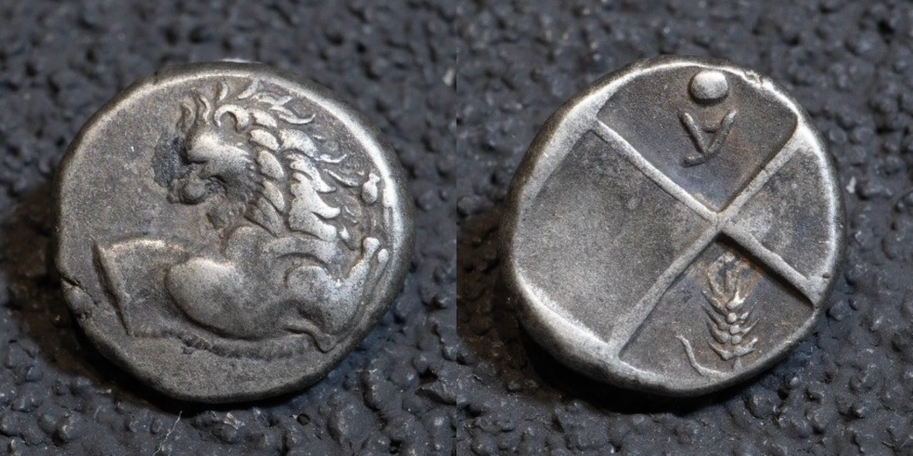
切尔森尼索斯 狮子半德银币
CHERSONESOS TAURICA · 4th Century BC
📜 历史背景
切尔森尼索斯（Chersonesos Taurica）是位于黑海北岸（现代克里米亚半岛）的重要希腊殖民城邦，约公元前5世纪由米利都（Miletus）殖民者建立。该城邦控制着黑海北岸的贸易航线，是古代世界重要的粮食和奴隶贸易中心。公元前438年，切尔森尼索斯加入雅典主导的提洛同盟（Athenian Delian League），在伯罗奔尼撒战争期间扮演重要角色。
正面描绘的狮子形象（lion forepart）是黑海希腊殖民城市标志性的造币题材，象征着力量与城邦的军事实力。回望姿态的狮子在古典希腊艺术中极为罕见，增加了这枚币的艺术价值和特殊性。背面四格戳记（quadripartite incuse square）是古典时期希腊银币的标准特征，每个格子内的小符号（字母或谷穗）是造币官或城邦徽记，反映了城邦的内部行政体系。
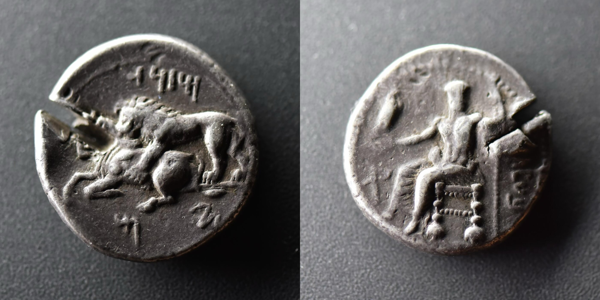
塔苏斯 波斯总督银币
CILICIA · Tarsus · Mazaios (Satrap, BC 361-334)
📜 历史背景
马扎亚斯（?-前328年），为波斯阿契美尼德帝国的贵族，也是大流士三世时的巴比伦尼亚总督。前331年，当亚历山大大帝东征时，马扎亚斯参与高加米拉战役，并且统帅波斯军队右翼，下辖叙利亚、米底、美索不达米亚、帕提亚、塔巴里斯坦、塞克(Saka)、赫卡尼亚、卡帕多细亚、阿尔巴尼亚等部队以及亚美尼亚骑兵。在战役中马扎亚斯借着人数优势，向马其顿左翼进行迂回，使马其顿左翼指挥官帕曼纽陷入困境，马扎亚斯几乎获得对马其顿左翼的胜利。但因亚历山大大帝率骑兵直接进入波斯军左翼的缺口，大流士三世落荒而逃，因发全军败退。马扎亚斯无法重整军队，才撤离战场。战后马扎亚斯向亚历山大献出巴比伦，亚历山大仍令他为巴比伦尼亚总督。马扎亚斯的未婚妻是大流士三世的女儿斯妲特拉二世，但斯妲特拉二世等大流士家眷在伊苏斯战役后沦为马其顿军的俘虏，加上马扎亚斯很早就去世，斯妲特拉二世便在苏萨集体婚礼中嫁给亚历山大大帝。
巴力从叙利亚到波斯都有人崇拜，甚至在迦南文化中也有他的存在，希腊神话中，巴力转化为巴勒斯(Belos)，代表的即主神宙斯。其全称「巴力西卜」(Baal-zebul)本义为「天上的主人」，常简称为巴力(ba'al)，在旧约圣经中被多次提及，用「事奉巴力」一词描述离弃耶和华。以色列王亚哈的妻子耶洗别曾下令所有国民只能事奉巴力，并屠杀了耶和华的先知，新约中巴力已被丑化为鬼王别名。到了中世纪，巴力在所罗门的小钥匙中，成为七十二柱排第1位的魔王。巴耶力(Bael)以鬼王的名义指挥魔界66个军团守护四方。
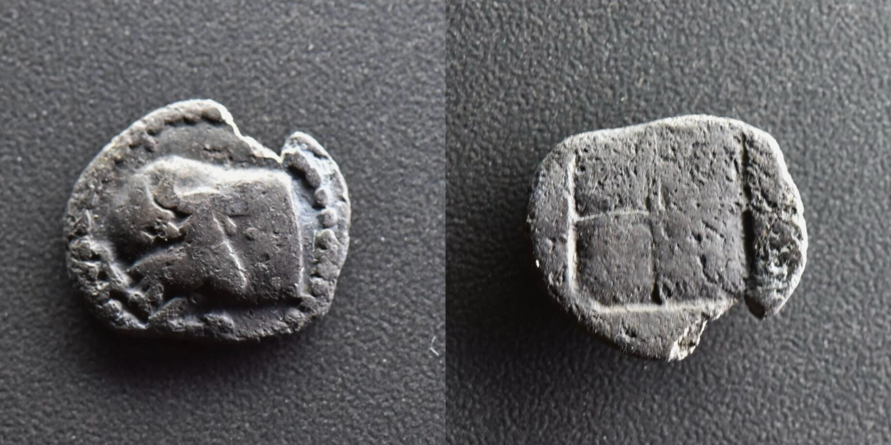
阿坎索斯 回首牛
Acanthus · Thraco-Macedonian · 三奥波银币
📜 历史背景
阿坎索斯（Acanthus）是一座位于卡尔息狄斯半岛（Chalcidice）南端的爱奥尼亚希腊城邦，约 BC 550 年由安德罗斯岛民建立。这座城市坐落于构成雅典娜海湾入口的战略要地，其经济主要依赖渔业、贸易和黄金开采。
阿坎索斯发行的"回首牛"银币是古典早期希腊钱币中最具辨识度的图像之一。正面为一头公牛卧姿，牛头向后回望，呈现典型的阿提卡艺术风格，这种独特姿态可能与酒神狄俄尼索斯崇拜有关。背面采用四分杯形凹陷纹（quadripartite incuse square），是色雷斯-马其顿银币的典型特征。
阿坎索斯币铸造年代约在 BC 470-390 年间，正值古典希腊时代早期。这些币当时作为贸易货币流通于爱琴海北部地区，反映了城邦与周边部落和殖民地的活跃商业往来。

腓力二世 青铜币
MACEDON · Philip II (359-336 BC)
📜 历史背景
腓力二世(Philip II)是马其顿王国国王(公元前359-336年),亚历山大大帝之父。他通过军事改革("马其顿方阵"战术创新)和外交手段,将马其顿从希腊边缘小国提升为希腊霸主,为亚历山大的帝国奠定基础。公元前338年喀罗尼亚战役击败希腊城邦联军后,腓力被尊为希腊世界实际统治者。
腓力二世青铜币正面为阿波罗戴王冠头像,阿波罗是希腊神话中的太阳神和音乐之神,也是马其顿王室的重要保护神。背面为青年骑手图像,是马其顿王室标志性的 iconography,铭文"ΦΙΛΙΠΠΟΥ"(腓力普斯/腓力)标明发行者身份。这类青铜小币主要作为辅币流通,用于日常小额交易。

马罗尼亚 四德拉克马
THRACE · Maroneia (ca. BC 189/8-49/5)
📜 历史背景
马罗尼亚(Maroneia)是色雷斯地区重要的希腊城邦,位于今希腊东北部爱琴海沿岸。该城邦以发达的葡萄酒产业著称,据古希腊作家记载,马罗尼亚的葡萄酒是希腊世界最负盛名的佳酿之一。
马罗尼亚四德拉克马正面为年轻酒神狄俄尼索斯(Dionysos)头像,头戴常春藤花冠,额前有装饰带。狄俄尼索斯是古希腊神话中的酒神与戏剧之神,与马罗尼亚的葡萄酒文化紧密相连。背面为裸身站立的狄俄尼索斯,手持葡萄串和两根纳特赫权杖(narthex),身侧有两个组合字母(monogram)作为造币厂或官员标记。铭文"ΔΙΟΝΥΣΟΥ ΣΩΤΗΡΟΣ"意为"狄俄尼索斯,救主","ΜΑΡΩΝΙΤΩΝ"意为"马罗尼亚人的",表明城邦发行身份。

维多利亚·马剑·克朗银币
UNITED KINGDOM · Victoria · St. George & Dragon · 1887
📜 历史背景
维多利亚女王禧年(Jubilee Head)是1887年为纪念女王登基50周年而发行的纪念性头像。5克劳恩(5 shillings = 1 Crown)是英国高价值银币,由皇家造币厂铸造。禧年头像由雕塑家约瑟夫·爱德华·伯姆(Joseph Edgar Boehm)设计,是维多利亚时代最具辨识度的钱币肖像之一。

兴登堡 Reichsadler 5马克银币
DEUTSCHLAND · Paul von Hindenburg · 1938
📜 历史背景
保罗·冯·兴登堡(Paul von Hindenburg,1847-1934)是德国著名军事将领和政治家,于1925年至1934年担任魏玛共和国总统。1933年他任命阿道夫·希特勒为总理,最终导致纳粹党掌权。
"Reichsadler"(帝国之鹰)版5马克银币正面为兴登堡戎装胸像,背面为德意志帝国之鹰纹章。这类银币是魏玛共和国末期的重要流通货币,1938年铸造版见证了第三帝国早期的经济与货币体系。A标表示由柏林造币厂(Berlin)铸造。

兴登堡 Reichsadler 5马克银币
DEUTSCHLAND · Paul von Hindenburg · 1938
📜 历史背景
保罗·冯·兴登堡(Paul von Hindenburg,1847-1934)是德国著名军事将领和政治家,于1925年至1934年担任魏玛共和国总统。1933年他任命阿道夫·希特勒为总理,最终导致纳粹党掌权。
"Reichsadler"(帝国之鹰)版5马克银币正面为兴登堡戎装胸像,背面为德意志帝国之鹰纹章。这类银币是魏玛共和国末期至第三帝国早期的重要流通货币,1938年铸造版见证了战前德国的货币体系。A标表示由柏林造币厂(Berlin)铸造。
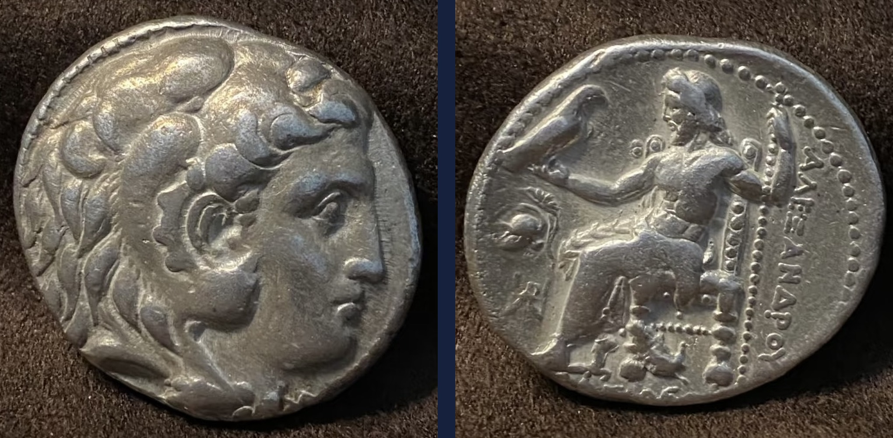
马其顿·亚历山大三世 大帝 四德拉克马
MACEDONIA · ALEXANDER III
📜 历史背景
亚历山大三世(大帝,356-323 BC)统一希腊、征服波斯,建立了人类历史上第一个横跨欧亚非的超级帝国。他对货币体系的改革影响深远:四德拉克马银币以赫拉克勒斯头像为正面,宙斯持鹰坐像为背面,成为帝国扩张的战略工具与文化符号。随着亚历山大的征服,这套币制被推广至从埃及到印度河的广大地区,继业者纷纷仿铸。利西普斯( Lysippos )风格的赫拉克勒斯肖像极具古典理想美,而宙斯坐像手持雄鹰的形象则强化了王权的神圣性。此枚米勒都斯(Miletus)铸币约 BC 325-320 年所见宙斯底座无碑铭,为亚历山大在世时期的早期铸型。

雅典城·新式猫头鹰 四德拉克马
ATHENS · NEW STYLE OWL
📜 历史背景
雅典猫头鹰银币是古希腊最具代表性的货币,从公元前5世纪延续至公元前1世纪,成为古代地中海世界的硬通货。古典时期结束后,雅典于公元前2世纪摆脱马其顿控制,重启银币铸造,采用全新设计风格--新式猫头鹰(New Style)。与古典版相比,新式猫头鹰正面雅典娜头像更为精致,头戴装饰丰富的阿提卡式头盔;背面猫头鹰立于双耳陶罐(amphora)之上,周边环绕橄榄枝,并刻有地方官姓名与徽记,体现了希腊化时期雅典城邦的自治与繁荣。

弗里几亚劳迪西亚城·蛇篮式四德拉克马
LAODIKEIA AD LYCUM · SERPENT FROM CISTA MYSTICA
📜 历史背景
蛇篮(Cista Mystica)是古希腊祭祀酒神狄奥尼索斯仪式中的神圣器物--一个装有幼蛇的柳编篮子,祭司将其取出让蛇爬出,以此象征神迹与重生。这一意象被广泛铸造在银币背面,成为古希腊钱币中最具神秘感的经典图式。此币正面蛇从篮中爬出,周围常春藤花环环绕;背面双蛇缠绕弓箭袋,铭文「AΠOΛΛΩNIOΣ ΕΥΑΡΧΟΥ」清晰漂亮--地方行政官阿波罗尼奥斯,尤阿尔科斯之子。公元前133年帕加马王国灭亡,小亚细亚落入罗马人之手,此币恐由罗马总督发行,兑换比率为三枚狄纳里银币换一枚蛇篮四德拉克马。

昔兰尼阿波罗-忘忧草2德拉克马
CYRENE · APOLLO CARNEIUS & SILPHIUM
📜 历史背景
昔兰尼(Cyrenaica,今利比亚东部)于公元前631年建城,相传由一群来自帖飞的移民在阿波罗神谕指引下建立。此城迅速崛起为古代世界最富庶的城邦之一,全赖一种神奇植物--Silphium(又名忘忧草, Laserpitium silphium)。这种形似巨大茴香的伞形科植物,只生长在昔兰尼周边海岸,拥有令人惊叹的医疗功效,尤其以高效的避孕作用闻名--古代妇女将其汁液涂抹于子宫口,成功率接近百分之百。其贸易价值极高,一磅Silphium的价格相当于一个罗马士兵六年的薪俸,罗马元老院甚至在其铸造的银币上压制Silphium图案,作为帝国繁荣的象征。塞琉古帝国在公元前3世纪初攻占昔兰尼后废止本地铸币,此币发行于城市沦陷后的罗马统治早期,由当地官员以原塞琉古模具或本地模具发行,正面阿波罗·卡内奥斯(Apollo Carneius,羊角神)头像,羊角与桂冠共存,象征城邦保护神的神圣权威;背面Silphium枝叶繁茂,茎粗壮有力,果实心脏形,根系卷曲--这一经典图式在昔兰尼钱币上延续了两百余年。令人唏嘘的是,公元1世纪Silphium已彻底灭绝,原因可能是过度采集、地震破坏与土壤退化三重打击。

塞琉古帝国塞琉古一世铜币
SELEUCID EMPIRE · ELEPHANT & BUCERAS
📜 历史背景
公元前323年亚历山大大帝骤然离世,其帝国随即陷入继业者战争(War of the Diadochi)。塞琉古(Seleucus)作为亚历山大的近身护卫官,于公元前321年被迫流亡埃及。公元前312年,在托勒密一世的支持下,塞琉古重返巴比伦,宣布独立,开启了塞琉古帝国长达两百余年的统治,是年便成为塞琉古纪元的元年。公元前301年伊普苏斯战役(Battle of Ipsus),塞琉古与利西马科斯(Lysimachus)联手击败安提柯(Antigonus),瓜分亚历山大帝国的东部版图,塞琉古一跃成为从安纳托利亚延伸至印度的庞大帝国之君,领土面积仅次于孔雀王朝印度。 阿帕美亚(Apamaea on the Orontes)位于奥隆特斯河畔,是塞琉古帝国最繁华的城市之一,以其母--塞琉古一世之妻阿帕美亚(Apama)命名,与安条克、塞琉西亚并列为帝国三大都城。 此币正面亚洲象向右行走,象征塞琉古从印度孔雀王朝君主旃陀罗笈多(Chandragupta)手中换取的五百头战象,这些战象是伊普苏斯战役决定性胜利的关键;背面戴牛角之马头为布克法罗斯(Bucephalus)的形象,据传是亚历山大大帝的传奇坐骑,塞琉古以布克法罗斯自比,昭示其作为亚历山大正统继承人的身份;船锚则暗指塞琉古大腿根部形似锚状的胎记,同时也象征其祖先尼卡托尔(Nicator,意为「胜利者」)作为亚历山大海军指挥官与腓力二世时期的海军将领之出身,将希腊世界的海上传统与新帝国紧紧相连。

君士坦丁一世追思币
DIVVS CONSTANTINVS PT AVGG · VENERANDA MEMORIA
📜 历史背景
公元337年5月22日,君士坦丁大帝(Constantinus I,公元306-337年在位)在尼科米底亚驾崩,结束了对罗马帝国近三十年的统治。这位在位期间颁布《米兰敕令》(313年)、召开尼西亚公会议(325年)、迁都博斯普鲁斯海峡并以「新罗马」命名新都的皇帝,是罗马世界最具变革意义的统治者之一。 君士坦丁驾崩后,其三位子嗣--君士坦丁二世、君士坦提乌斯二世、君士坦斯--共同继承帝位,史称「三兄共治」(337-340年)。按照罗马传统,前任皇帝在驾崩后即被元老院封神(Consecratio),纳入罗马神祇之列并享有祭祀。新任诸帝随即在各大造币厂发行追思币(Memorial Issue / Divus Issue),纪念亡父之「成神」,并以铭文宣告其「诸帝之父」(Pater Augustorum)的崇高地位。 此枚追思币为君士坦提乌斯二世(Constantius II,公元337-361年在位)在位初期所发行。正面铭文「DV CONSTANTINVS PT AVGG」--意即「神化君主君士坦丁,诸帝之父」--其中「PT」(Pater,之父)是追思币特有的称号,标明逝者为在位诸帝之父。戴维露姆面纱(velum)的半身像表明君士坦丁已被纳入神之行列。**特别值得关注的是正面铭文采用「DV」而非常见的「DN」(Dominus Noster,吾主)**--此或为特定造币厂之变体写法,亦可能因实物磨损导致字母辨识存疑,故仍以实物记录为准。 背面的「VN-MR」铭文实为「Veneranda Memoria」(应受崇敬之记忆)之缩写,是君士坦丁追思币中**特殊变体类型**之一。相较于更为常见的「CONS(Consecratio)」型封神图案(祭坛配阶梯),VN-MR型以**戴面纱穿托加的君士坦丁站姿全身像**为核心,配合「应受崇敬之记忆」的铭文,传达对已故君主的永恒怀念。底注「CONST」指示该币铸造于**君士坦丁堡造币厂**(Constantinople Mint),即君士坦丁大帝亲手建立的新都城。

哈德良 LIBERALITAS AVG 塞斯特提
PONT MAX TR POT COS II · LIBERALITAS AVG · SC
📜 历史背景
在古罗马,有一种特殊的活动叫congiarium,起初它是向罗马城市居民分发油或酒,到奥古斯都时期演变成了在特殊场合(如皇帝登基、庆祝凯旋等)分发钱财。从尼禄统治时期开始,钱币上就出现了congiarium的场景,画面中总有一个人高举着带长柄的矩形物体。而当「慷慨」(Liberalitas)这一拟人形象在哈德良统治时期首次出现在钱币上时,这个矩形物体成了她的标志性特征。 这个神秘的矩形物体到底是什么呢?此前有多种解读。有人认为它是「tessera」(一种代币或凭证),也有人觉得是「abacus」(算盘),但观察不同皇帝时期钱币上对congiarium仪式图案的演变,尼禄时期的钱币上有两种图案形式,一种成了后续皇帝钱币的标准样式;图拉真时期的图案似乎印证congiarium有两个阶段;哈德良时期,「慷慨」拟人形象出现,逐渐取代了原本拿着矩形物体的男性形象。 结合历史记载中 congiarium 发放的货币面额信息(大多为第纳里乌斯银币,有时也会使用奥里斯金币),这个矩形物体极有可能是用于分发钱币的计数板。其表面的圆形凹陷,可辅助工作人员迅速数出待分发的钱币数量。在君士坦丁凯旋门的浮雕上,我们能够清晰看到皇帝使用类似物体向接受者分发钱币的场景。此外,画面中拿着它的人将其举到与头平齐或更高的位置展示给接受者和在场众人,保证分发过程的公平和诚实,避免出现盗窃和欺诈行为。 总的来说,这个成为「慷慨」拟人形象标志性特征的矩形物体,是congiarium仪式中不可或缺的计数、展示和分发工具,它在加快分发速度的同时,保障了分发的公正性。对于古罗马钱币收藏者而言,了解这些知识,能让我们手中的钱币「开口说话」,也是探索古罗马社会经济、政治和文化的重要线索。

拿破仑皇帝兼意大利国王1索尔迪铜币
伦巴第铁王冠 · 米兰造币厂
📜 历史背景
1811年拿破仑帝国鼎盛时期,意大利王国(Regno d'Italia)铸造的1索尔迪铜币。米兰造币厂(Mint Mark M)出品,编号NGC-AU50,成交价992元,来源云台主人2025年10月。 拿破仑于1805年在米兰加冕为意大利国王,随后在意大利领土上推行与法兰西帝国一致的行政、金融与货币体系。意大利王国使用法国货币标准:里拉(Lira)为记账单位,辅币包括索尔迪(Soldo,1里拉=20索尔迪)和分(Centesimo,1索尔迪=5分)。此枚1索尔迪铜币正面为拿破仑桂冠头像,铭文NAPOLEONE IMPERATORE E RE(拿破仑皇帝兼国王),底部署名1811与造币厂标记M(Milano)。背面为伦巴第铁王冠(Lombardy Iron Crown)--意大利统一运动的核心象征,王冠中心铭刻REGNO D'ITALIA(意大利王国),底部面值1 SOLDO。 伦巴第铁王冠(Lombardy Iron Crown)相传以钉死耶稣的圣钉铸造,直径4.5厘米,重约250克,外包金箔,内环为铁质。它是中世纪伦巴第王国及意大利独立运动的重要象征,拿破仑在取得马伦戈战役(1800年)后于伦巴第加冕时使用过此王冠。将铁王冠图案铸于钱币,既是拿破仑宣示其意大利王权的政治行为,也暗示他继承了意大利乃至神圣罗马帝国的历史正统性。此币NGC AU50品相,币面光亮,边齿锐利,是意大利王国拿破仑时期铜币的典型收藏品。

伊斯特罗斯 双人头银币
海鹰抓海豚 · 黑海古典银币
📜 历史背景
莫西亚(Moesia)伊斯特罗斯(Istros,黑海西岸重要城邦,约今罗马尼亚境内多瑙河三角洲)铸造的古典银币。 正面为双少年头像--一正一反、相互环绕。这种独特的双人头像图案是伊斯特罗斯城币的标志性设计,其象征意义学界尚有争议:一种观点认为代表Dioscuri(双子神卡斯托尔与波吕克斯),另一观点认为表现城邦的两位创建英雄或神灵(Heroes)。 背面为海鹰(鸥鹭)展开双翅抓握海豚,向左飞行。底部署名IΣTPIH(伊斯特罗斯城的希腊文名称)。这一图案反映了伊斯特罗斯作为黑海贸易港口的海洋经济特征--海鹰象征天空与神意,海豚象征海洋与商业繁荣,两者结合宣示城市对黑海贸易通道的掌控。 伊斯特罗斯城约公元前656年由米勒图斯(Miletus)移民建立,是黑海地区最早的希腊殖民城邦之一。其钱币铸造传统延续数百年,银币体系与雅典、爱奥尼亚等地有密切往来。
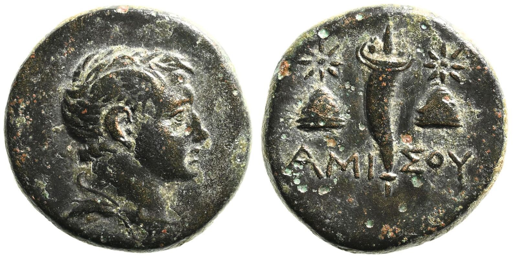
本都·阿米索斯 珀尔修斯/丰饶角铜币
本都王国·米特里达梯六世摄政时期
📜 历史背景
本都王国(Pontos)位于安纳托利亚北部黑海沿岸,阿米索斯(Amisos,今土耳其萨姆松)是其最重要的港口城市之一。本都王国自米特里达梯一世建立,经历了数代君主的统治。约BC 120年,米特里达梯六世(Mithradates VI Eupator)继位,由于年幼由母亲摄政,此枚铜币即发行于这一时期。丰饶角象征富饶,狄俄斯库里兄弟的双帽子则暗示港口的航海保护,八芒星则代表这对孪生神兄弟。铭文ΑΜΙΣΟΥ即阿米索斯的希腊文拼写。
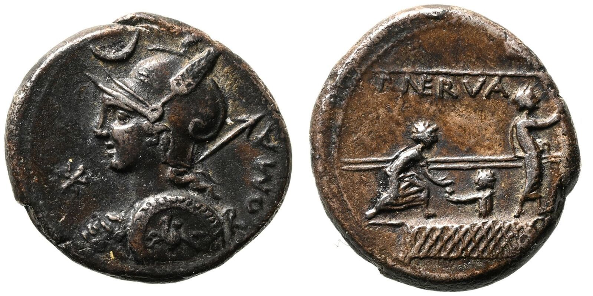
罗马共和国 P. 李锡尼亚·内尔瓦 投票德纳里乌斯
Comitium 公民投票场景 · Crawford 292/1
📜 历史背景
这是罗马共和国晚期最著名的投票场景德纳里乌斯之一,由造币三巨头(tresvir monetalis)P. Licinius Nerva 于公元前113-112年铸造。 背面所描叙的公民投票场景是罗马共和政治史中极其罕见的图像记录:一名选民从下方助手手中接过选票(tabella),另一名选民将选票投入票箱(cista),右上方有一张标有字母P的选票。 这一图景与罗马秘密投票制(tabella)的历史性改革密切相关。公元前139年的 Lex Gabinia 引入了立法大会中的无记名投票,公元前137年的 Lex Cassia 将其扩展至司法审判,公元前131年的 Lex Papiria 进一步强化其适用。这一系列改革标志着罗马民主程序的重要进化--公民不再需要公开自己的投票立场。 选票上的P字学界通常解释为某位候选人姓名的首字母缩写,具体指代仍有争议。 P. Licinius Nerva 出身李锡尼亚氏族(gens Licinia),其本身日后也成为罗马政坛重要人物。
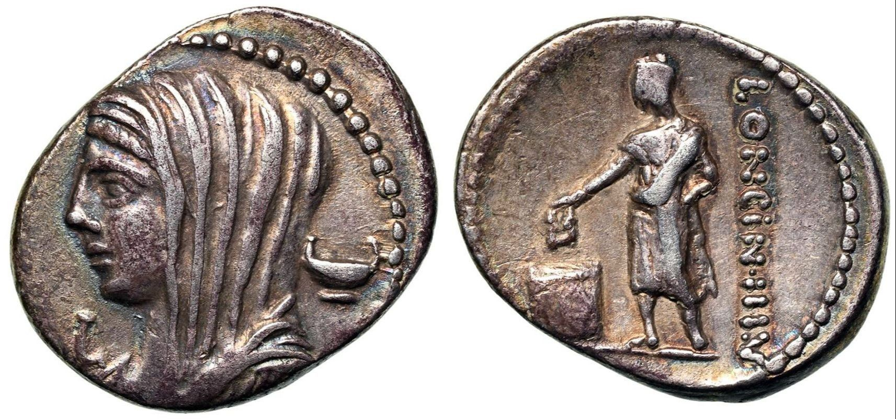
罗马共和国 C. Cassius Longinus 维斯塔祭司德纳里乌斯
Vesta · Rome Mint · 63 BC
📜 历史背景
此币正面图案献给 L. Cassius Longinus Ravilla--这位 L. Cassius Longinus(造币官)的祖父,他是一位备受尊敬的裁判官和法学家。公元前 113 年,Ravilla 主持了对三名维斯塔处女(Vestal Virgin)的审判,指控她们破坏贞操,最终判定其中两人有罪并处以死刑--这一事件在罗马历史上极为罕见,体现了罗马司法的严厉一面。他的银币背面所描绘的,正是他担任保民官期间(公元前 137 年)引入的罗马秘密投票制度的运作场景。这一制度革新标志着罗马公民无需在公开场合表明投票立场--投票权的引入深刻影响了罗马的民主进程。
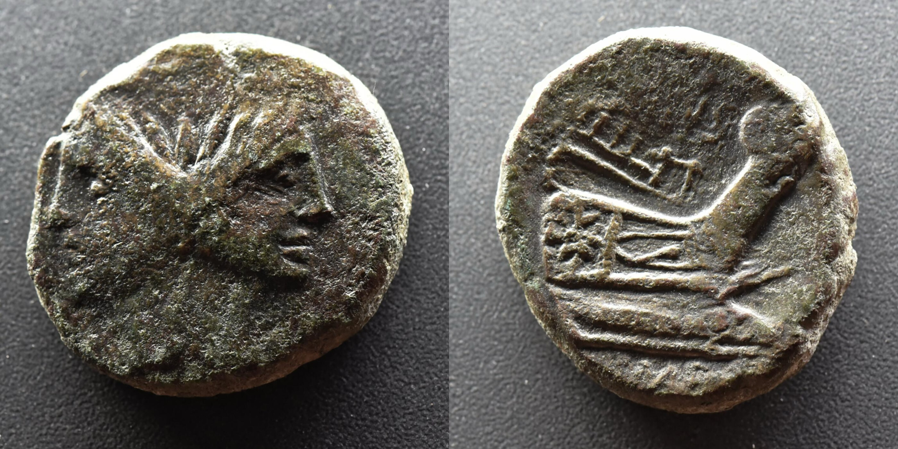
塞克斯图斯·庞培 大铜币
Sextus Pompey · Sicily Mint · BC 45-43
📜 历史背景
塞克斯图斯·庞培(Sextus Pompey, BC 67-35)是古罗马著名将领庞培大帝(Gnaeus Pompeius Magnus, BC 106-48)的第三个儿子。公元前48年其父在法萨卢斯战役败于凯撒后逃往埃及,次年遇刺身亡。庞培的两个兄长先后战败或被处决,塞克斯图斯则在西班牙和北非积蓄力量,于公元前43年占据西西里岛,控制地中海航线,成为海上霸主。 公元前39年,屋大维与塞克斯图斯签订米塞努(Misenum)协议,承认其对西西里、撒丁尼亚和亚该亚的控制权,并授予其舰队司令(Praefectus Classis)的头衔。公元前38年,塞克斯图斯与屋大维关系破裂,双方在叙拉古(Syracuse)和米列(Mylae)两次海战中交锋。公元前36年,阿格里帕(Agrippa)在诺奥奇姆(Naulochus)海战中彻底击败塞克斯图斯,迫使其投降并流放。公元前35年,塞克斯图斯在流放中因涉嫌叛乱被屋大维下令处决。 此币铸造于塞克斯图斯占据西西里期间,正面双面神雅努斯(Janus)头像象征新年的开始与结束,代表罗马的永恒与复兴;背面船首象征其海上制海权,铭记其在罗马内战中作为海上霸主的地位。
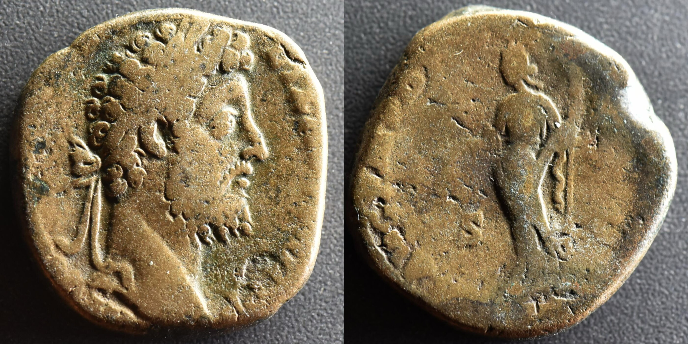
康茂德 赛斯特提大铜币
ROMA · Commodus · AD 179-192
📜 历史背景
康茂德(Lucius Aurelius Commodus Antoninus,161-192 AD)是罗马安敦尼王朝第七位、亦是最后一位皇帝,180年3月17日-192年12月31日在位,为"哲学家皇帝"马可·奥勒留(Marcus Aurelius)的亲生儿子。其十二年统治普遍不得元老院与人民喜爱,史学家卡西乌斯·迪奥(Cassius Dio)将其视为暴君典范,标志着"五贤帝"时代繁华的终结,其继位为三世纪危机埋下伏笔。192年末,康茂德在浴场被情妇玛琪亚、近卫军长官莱图斯及摔跤手纳尔奇苏斯合谋刺杀;翌年元老院推举佩蒂纳克斯即位,并通过"除忆诅咒"(damnatio memoriae)抹除其记忆。此后帝国再度陷入内战。

米利都·阿尔康 1德拉克马银币
Ionia, Miletos · Alkon
📜 历史背景
这枚币来自古希腊首位哲学家泰勒斯的家乡米利都。泰勒斯是古希腊七贤之一，西方思想史上第一个有记载有名字留下来的思想家，被称为"科学和哲学之祖"。据希罗多德记载，泰勒斯曾准确预言了一次日食（学界推测为公元前585年5月28日），并提出"水是万物本源"的命题。米利都位于爱奥尼亚海岸，是公元前7至5世纪爱琴海世界最繁盛的工商业城邦之一，殖民范围远及埃及与黑海沿岸，由铸币官阿尔康（ΑΛΚΩΝ）发行此币。
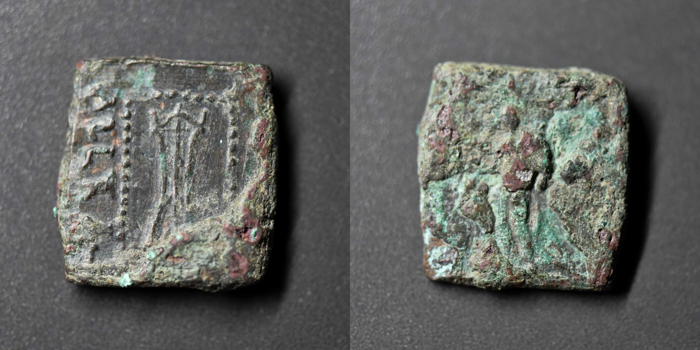
希腊-巴克特里亚 · 阿波罗多托斯一世 Hemiobol 铜币
Indo-Greek Kingdom · Apollodotus I (Σωτήρ)
📜 历史背景
阿波罗多托斯一世（'Aπολλόδοτος Α΄ ò Σωτήρ · 救主阿波罗多托斯，BC 186-160）是印度-希腊王国的开创君主之一，继承希腊-巴克特里亚王国南部领土后南下印度河流域创立王国。他发行的德拉克马银币和铜币以阿波罗形象为核心，正面为阿波罗立像手持弓箭，背面为德尔斐三足祭坛（τρίπους），象征阿波罗神职与希腊文化传统。希腊铭文使用「ΣΩΤΗΡ」（救主）称号，与塞琉古国王常用称号一致，旨在彰显其正统王权。佉卢文铭文则面向印度本地民众，体现希腊君主对当地文化习俗的包容与整合。此币面值 Hemiobol（1/12德拉克马），为日常小额交易所用铜币。
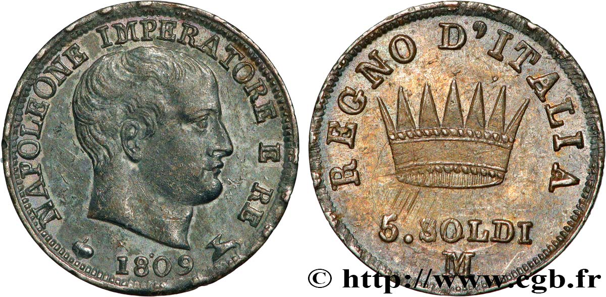
意大利王国 · 拿破仑一世 5索尔迪 银币 1809 米兰
Napoleone Imperatore e Re · Regno d'Italia · Milano
📜 历史背景
意大利王国（1805-1814）为拿破仑一世治下北意大利的附庸王国，由米兰总督区演化而来。1805年3月17日，拿破仑接受意大利王冠；5月26日，约瑟芬与他在米兰大教堂加冕，与巴黎加冕一样，他亲手将王冠戴上，宣告"上帝赐予我，触者当心"。后任命其女婿欧仁·德·博阿尔内为意大利总督。9年间，米兰造币厂以拿破仑名义发行全套意大利王国银铜币，5索尔迪为小额流通币，铁王冠（Corona di Ferro）作为王国主权标志，源自中世纪伦巴第王国。1814年1月缪拉背叛与奥地利结盟，意大利王国王朝崩溃。
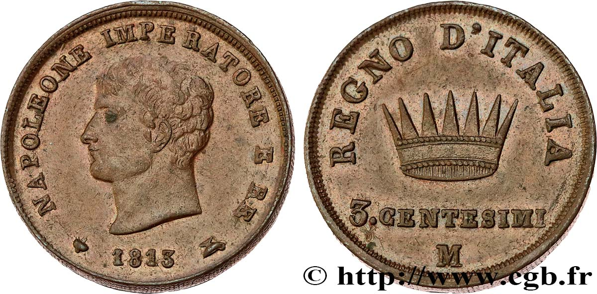
意大利王国 · 拿破仑一世 3 Centesimi 铜币 1813 米兰
Napoleone Imperatore e Re · Regno d'Italia · Milano
📜 历史背景
意大利王国（1805-1814）为拿破仑一世治下北意大利的附庸王国。1813年铸造的3 Centesimi为该系列最后年份之一，1814年随着拿破仑第一次退位，意大利王国随之覆灭。铁王冠（Corona Ferrea）为伦巴第王国的古老加冕标志，也是拿破仑作为意大利国王的象征。
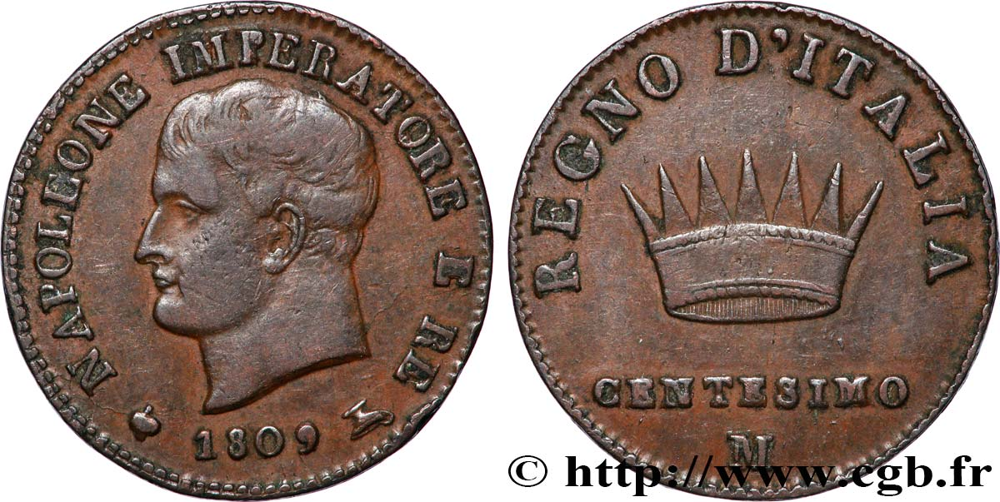
意大利王国 · 拿破仑一世 1 Centesimo 铜币 1809 米兰
Napoleone Imperatore e Re · Regno d'Italia · Milano
📜 历史背景
意大利王国（1805-1814）为拿破仑一世治下北意大利的附庸王国，1805年拿破仑加冕为意大利国王，由其继子欧仁·博阿尔内（Eugène de Beauharnais）担任副王（Vicè Re）实际治理。铁王冠（Corona Ferrea）是伦巴第王国的古老加冕标志，自中世纪起即为意大利王权的象征。1809年铸造的1 Centesimo为该系列最小面值铜币，1814年随着拿破仑第一次退位，意大利王国随之覆灭，存世品相完好的已属收藏级目标。
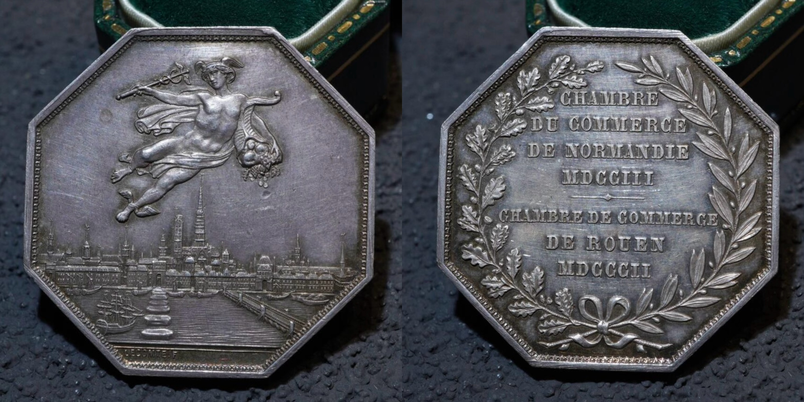
法国八角 · 鲁昂商会 墨丘利 银质代用币 1852
Chambre de Commerce de Rouen · Jeton · Mercure · MDCCCLII
📜 历史背景
1852年法国鲁昂商会（Chambre de Commerce de Rouen）发行的银质代用币，时值法兰西第二共和国终结、第二帝国即将建立之年（同年12月路易-拿破仑称帝，建立第二帝国）。鲁昂（Rouen）为诺曼底大区首府，塞纳河下游重要海港城市，19世纪法国对英及对殖民地贸易的核心枢纽之一。法国商会在19世纪中叶广泛发行代用币以补充官方小面额货币的不足，主要用于地方商业流通。反面同时镌刻"诺曼底商会"与"鲁昂市商会"两机构名称，体现鲁昂作为大区首府的双重行政地位。
墨丘利（Mercure）作为罗马商业与旅行之神，是商会币的典型主图题材，象征商业流通与繁荣。城景细致呈现鲁昂大教堂（中央火焰式尖塔）、圣旺教堂（左侧双塔）、塞纳河港口帆船与科尔内耶桥（Pont Corneille），是19世纪中叶鲁昂城市风貌的珍贵缩影。底部雕刻师签名 LECOMTE F. 为该时期巴黎活跃的奖章雕刻师。
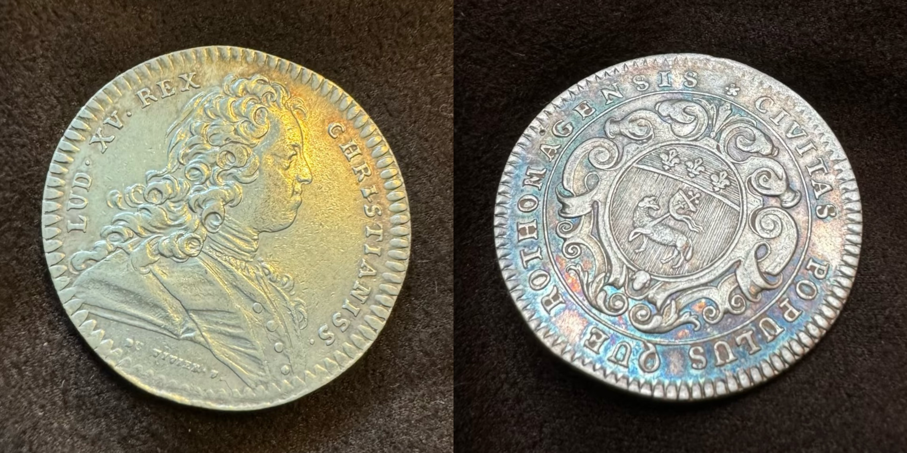
法国 · 路易十五 头像 鲁昂地区 银质代币
ROUEN (VILLE DE) · Louis XV · émission vers 1725
📜 历史背景
鲁昂（拉丁文 Rotomagus）原为高卢 Veliocasses 部族之城，罗马时期发展起来，4 世纪末成为里昂二世（Lyon II）的都市区。曾多次被诺曼人占领，911 年成为诺曼底公爵的住所。1144 年成为市镇，1204–1419 年归属法国，其后被英国占领直至 1449 年。诺曼底财政部于 1499 年转变为主权法院，1515 年改为议会。在旧政权时期，鲁昂是纺织业（"rouenneries"和印第安布）及对非洲贸易的繁荣中心。
鲁昂的纹章：红盾上绘有银色复活节羔羊（Agnus Dei），头颅笼罩光环，转向后方，衔着一杆绣有金十字的旗帜；上方蓝色底散布三朵金鸢尾花。鲁昂也是圣女贞德（Jeanne d'Arc）的受难地，1431 年她在此被火刑。
本币为 18 世纪初路易十五统治时期发行的"法兰西城市（Jeton des Villes）"系列代币之一，用于地方商业流通或行政账目结算。由奖章雕刻师 DU VIVIER 制版，是该系列鲁昂币的标准形制——正面路易十五肖像，反面城市纹章与拉丁铭文。铭文 CIVITAS POPULUS QUE ROTHOMAGENSIS 意为"鲁昂城与鲁昂民"。
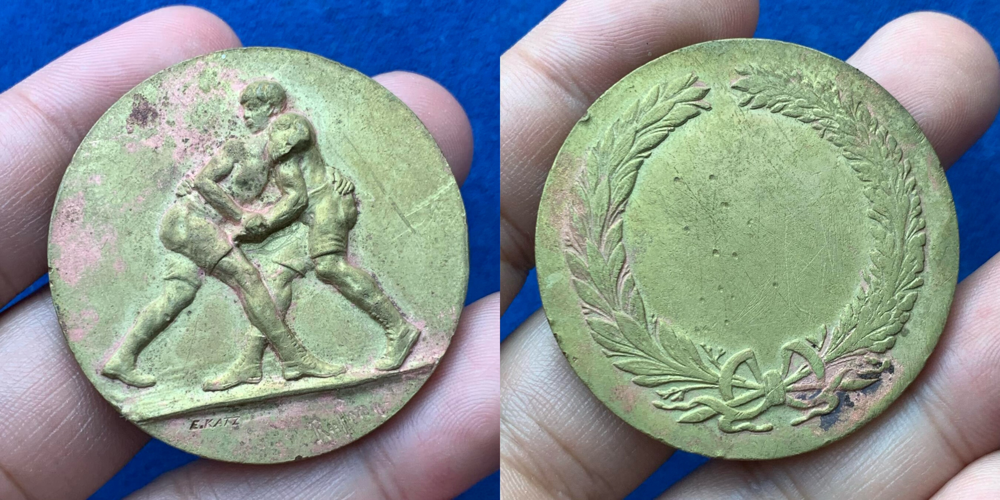
法国 · 巴黎通信局 墨丘利 银质八角代币
Bureau de Correspondance de Paris · Jeton Octogonal en Argent · 1766
📜 历史背景
此为 1766 年法国巴黎通信局（Bureau de Correspondance de Paris）发行的银质八角代用币（Jeton octogonal），属于路易十五（Louis XV, 1715–1774 在位）时期法国铸币厂（Monnaie de Paris）官方铸造的会计/纪念类代用币。
关于 Jeton（代用币）：法国 jeton 是一种历史悠久的代用币传统，最早可追溯至中世纪，由王室或造币厂铸造，主要用于：① 宫廷/行政机关的会计计算（筹码）② 高等法院（Parlement）开庭纪念 ③ 各类机构（商会、大学、医院）的官方赠礼与纪念 ④ 年终结算、新年赠礼等礼仪场合。18 世纪是法国 jeton 艺术的黄金时期，形制多样，雕刻精美，许多为八角形（octogonal）以避免桌面滚动。
正面铭文 "SIT NULA FESTINA"（拉丁文格言 "不要仓促"）配合墨丘利（Mercure）图案——墨丘利是罗马神话中的商业、旅行、消息传递之神，caduceus（双蛇杖）和翼帽是其标志。在通信局（Bureau de Correspondance）的语境下，墨丘利象征"迅速但准确的信息传递"，格言 "不要仓促" 则提醒通信从业者：效率应以准确为前提。这是 18 世纪法国 jeton 艺术中典型的"主题—格言"设计语言。
反面为法国王室盾徽（cartouche aux armes de France），盾面是波旁王朝的纹章（百合花纹 fleurs-de-lis），上方王冠，两侧月桂/橄榄枝装饰，下方垂幔。铭文 "DU BUREAU DE CORRESPONDANCE A PARIS" 标明发行机构。1766 年路易十五统治中期，巴黎通信局是当时负责管理首都及地方邮政通信事务的行政机构。
工艺与收藏：此枚 jeton 由法国铸币厂（Monnaie de Paris）官方雕刻师设计铸造，正面底部 "F.M." 为雕刻师姓名缩写。整体铸造精良，人物姿态生动，盾徽纹饰清晰，包浆自然。法国 18 世纪 jeton 是国际钱币收藏的重要门类，主要参考目录包括 Feuardent《Les Jetons français》、Ciani《Les Jetons français du Moyen Âge à nos jours》、以及现代著作 Bompaire & Dhénin《Jetons et Méreaux du Moyen Âge à nos jours》。
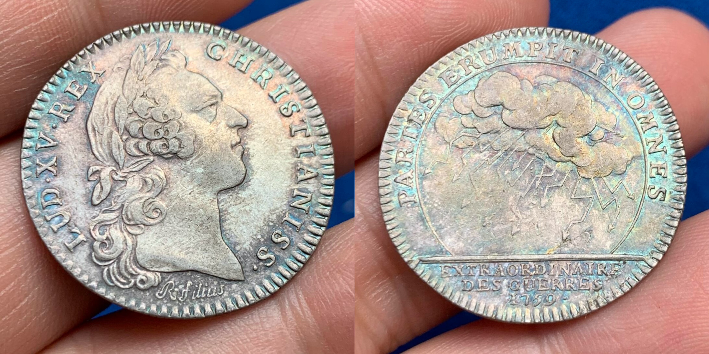
法国 · 路易十五 非凡战争 银质代用币
Extraordinaire des Guerres · Jeton en Argent · 1750
📜 历史背景
此为 1750 年法国"非凡战争"（Extraordinaire des Guerres）银质代用币（Jeton），属于路易十五（Louis XV, 1715–1774 在位）时期的军事财政系统发行，用于军队开支记账与结算。
关于 Extraordinaire des Guerres：这是法国旧制度（Ancien Régime）时期的军事金库，负责筹集和核算战争经费。18 世纪法国参与多场战争（包括奥地利王位继承战争 1740–1748、七年战争 1756–1763），军事开支庞大，该机构发行的代用币在军队财务运作中发挥了重要作用。
设计与象征：正面为路易十五右向戴桂冠头像，铭文 LVD. XV. REX CHRISTIANISSIMUS（路易十五，最信仰基督的国王），底部雕刻师签名 R. FILIUS（René Filius）。背面为云层中闪电劈下的寓言场景，铭文 PARTITES ERUMPIT IN OMNES（"它同等降临于一切"），底部 EXTRORDINAIRE DES GUERRES 标注发行机构。这一设计将国王的权威比作雷电，具有震慑敌国的政治寓意。
雕刻师 René Filius：18 世纪法国著名钱币与章牌雕刻师，活跃于 1730–1770 年代，其作品以精细的肖像和优雅的拉丁铭文著称。
收藏价值：法国军事财政系列 jeton 是收藏界的重要专题，Extraordinaire des Guerres 系列尤以政治寓言设计见长。参考目录：Feuardent《Les Jetons français》、Ciani《Les Jetons français》。
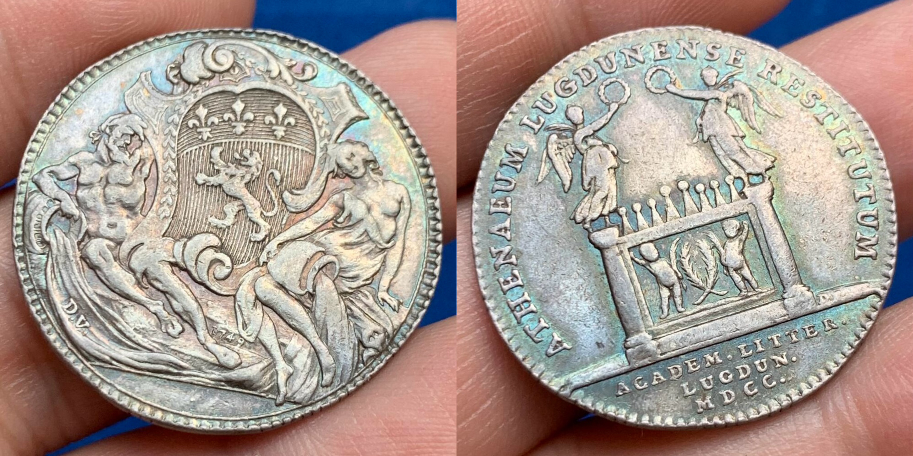
法国 · 里昂文学院 银质代用币 Jeton
Athenaeum Lugdunense · Jeton en Argent · 1749
📜 历史背景
此为 1749 年法国里昂文学院（Athenaeum Lugdunense）银质代用币（Jeton），雕刻师 D.V.。里昂文学院成立于 1700 年，1749 年经历重建（Restitutum），此币即为纪念重建而发行。
关于里昂文学院：里昂是罗马高卢行省最重要的城市之一（古名 Lugdunum），里昂文学院成立于 1700 年，至 1749 年已近半个世纪，期间经历了多次制度变迁。1749 年的重建是学院历史上重要时刻，此 Jeton 即为纪念这一事件而铸。
设计解读：正面为里昂城市纹章，盾内立狮（里昂城市象征），盾两侧分别为持桨的罗讷河神（Rhône）与持立标的索恩河神（Saône）——两河交汇是里昂城市地理的核心特征。背面为古典柱廊神庙，上方两位胜利女神（Victoria）持桂冠，象征学院知识与荣耀的胜利。整体为新古典主义风格的学院纪念章设计。
功能与收藏：此类 Jeton 既有计数功能，也用于纪念学院重大事件。1749 年重建纪念币因其历史意义与优雅设计，成为法国学院纪念 Jeton 系列中的重要品种。参考目录：Feuardent《Les Jetons français》、Ciani《Les Jetons français》。
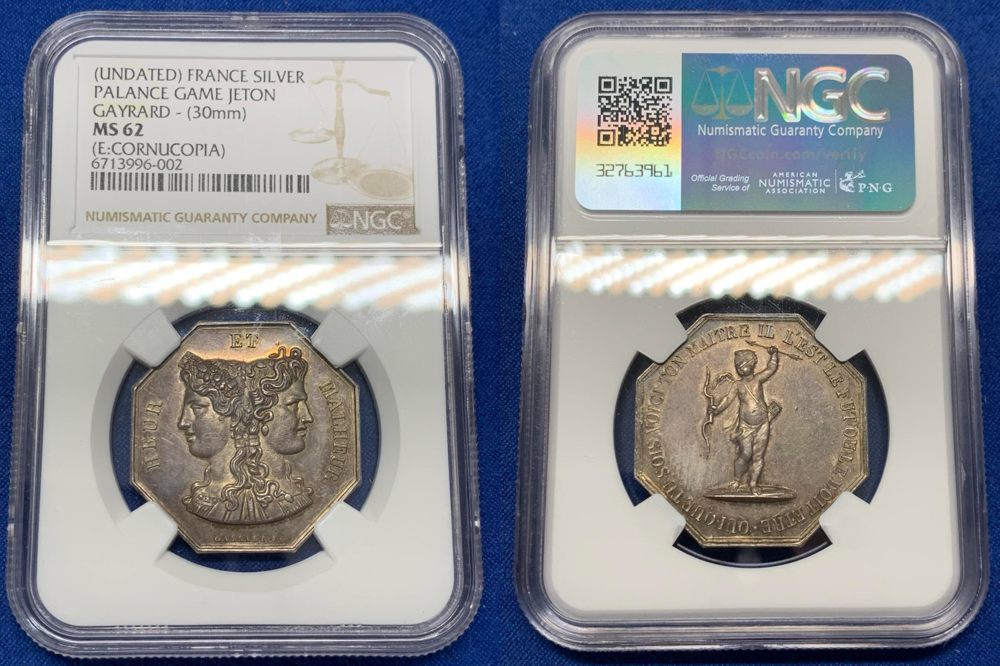
法国 · 双面神 丘比特 银质代币
French Marriage & Cupid Silver Token · Undated · GAYRARD.F
📜 历史背景
此为未纪年法国银质代币，以婚姻爱情为主题。雕刻师 GAYRARD.F 为法国 19 世纪钱币与章牌雕刻师，签名风格与该时期法国代用币传统相符。
关于 Jetons d'Amour：法国存在以爱情与婚姻为主题的代币传统（Jetons d'amour / Marriage Tokens），此类代币常见于婚庆场合，作为情感信物或纪念品赠送，图案通常以双面神（Janus）、丘比特（Eros/Cupid）或爱神为题。此枚正面采用典型的 Janus 双面人像构图，左右分别代表新郎与新娘，寓意婚姻的合一与忠诚，是这一传统中极具代表性的图式。
NGC 评级 MS62：此枚经 NGC（Numismatic Guaranty Corporation）评级为 MS62，属于未流通品相中接近精品的级别，表面光泽与细节保存状态优异，在同类题材存世品中品相突出。NGC 封装同时提供了真伪保障与品相背书。
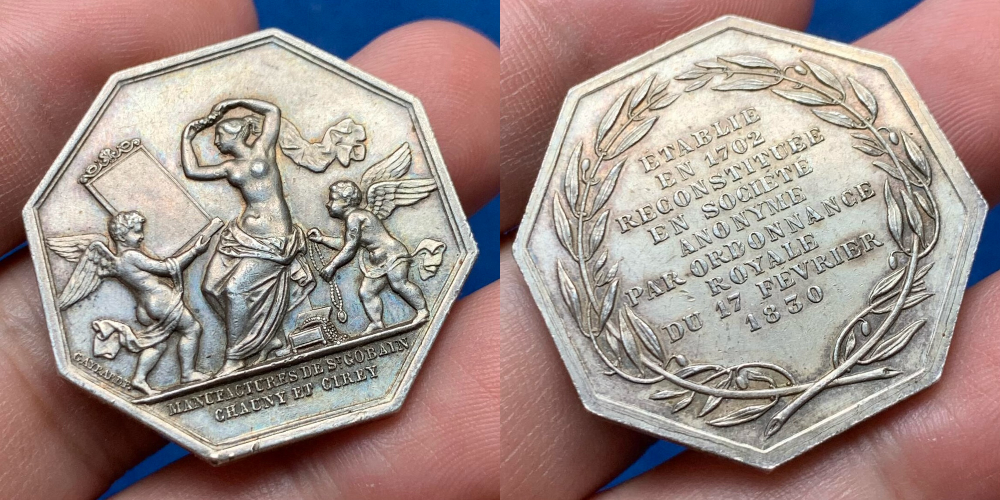
法国 · 圣戈班皇家制镜公司 八角银质代币
Manufacture de Glaces de Saint-Gobain · Chauny & Cirey · 1830 · GAYRARD.F
📜 历史背景
此为法国圣戈班制镜公司（Manufacture de Glaces de Saint-Gobain）1830年发行的八角形银质代币。
关于圣戈班：圣戈班（Saint-Gobain）前身为1665年由法国国王路易十四亲自批准创建的皇家玻璃工坊（Manufacture royale de glaces de miroirs），是当时欧洲最大、最先进的玻璃与镜子制造商。1830年2月17日，法国国王查理十世颁布皇家敕令，将圣戈班改组为股份公司（Société Anonyme），这标志着公司从皇家工坊向现代工业化企业的历史性转型。此枚代币正是在这一历史节点发行的纪念性产物，铭记公司由皇室工坊转型为股份制企业的里程碑事件。
雕刻师 GAYRARD.F：此币与 FJ-006（双面神爱情代币）同出于19世纪法国著名雕刻师 GAYRARD.F 之手，其签名风格在同时期法国银质章牌中辨识度极高。GAYRARD 即 Pierre-Édouard Gayrard（1802-1879），为法国七月王朝至第二帝国时期最重要的章牌与钱币雕刻师之一，活跃于巴黎铸币厂与众多私人铸章工坊。
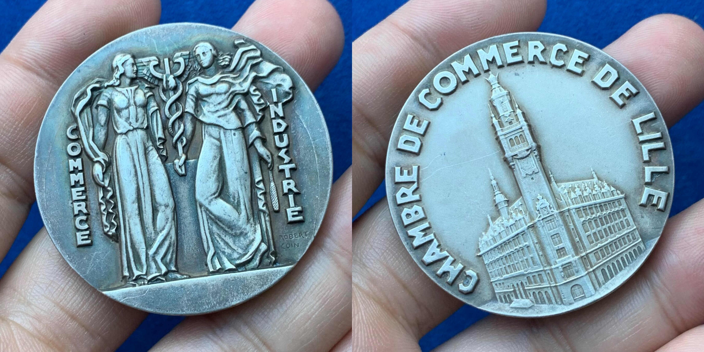
法国 · 商业与工业双女神 银质奖章
Chambre de Commerce de Lille · Médaille d'Argent · 950‰
📜 历史背景
此为法国里尔商会（Chambre de Commerce de Lille）发行的官方奖章。里尔商会是法国最古老的商会之一，由柯尔贝尔（Jean-Baptiste Colbert）于 1667 年在路易十四时期创建，最初职能是代表里尔的纺织业与海外贸易利益。十九世纪起，商会开始铸造奖章授予地区工业成就、出口贡献、博展会优秀展商等。
奖章正面以"商业（Commerce）"与"工业（Industrie）"双寓言女神并立为题——商业女神通常手执丰饶角（corne d'abondance），象征物资流通；工业女神则扶大齿轮（roue dentée），代表近代机械工业。二人之间立赫尔墨斯之商神杖（caducée），象征商旅平安。雕刻师签名 ROBERT 为这一版里尔奖章的著名设计者。
反面以里尔商会大楼本身为主题——这座位于戴高乐将军广场（Place du Général de Gaulle）旁的建筑始建于 1652 年，后多次重建，现存主立面为新弗拉芒风格（Néo-Flamand），中央高塔尖耸，是里尔工业资产阶级与商业传统的象征。边铭"丰饶角 + 1 ARGENT"为法国银质工业奖章的标准成色标识（"1号银"指 950 银成色）。
这类奖章流通于工业表彰场合，亦作为商会会员身份象征或纪念品馈赠，因厚实银体与精美浮雕，至今仍为法国地方工业史与奖章艺术（Medallic Art）的重要实物。

法国 · 古典式摔跤 铜质奖章
Lutte Gréco-Romaine · Médaille de Bronze · R. Linzer
📜 历史背景
此为法国 20 世纪上半叶发行的体育奖章，正面表现古典式摔跤（lutte gréco-romaine）两位运动员的扭打瞬间。古典式摔跤是法国传统强项，19 世纪末在皮埃尔·德·顾拜旦（Pierre de Coubertin）推动现代奥运复兴后，该项目于 1896 年首届现代奥运会即被列入正式比赛。20 世纪上半叶法国各地摔跤俱乐部、博览会、工人体育联合会（Fédération Sportive du Travail）经常颁发此类奖章，以表彰比赛冠军与体育成就。
本枚奖章由两位雕刻师合作完成：底部双签名 "E. KATZ"（设计师）与 "R. LINZER"（雕刻师）。R. LINZER 即 Robert Linzer（1901–1969），法国 20 世纪最重要的奖章雕刻师之一，曾长期任职于巴黎造币厂（Monnaie de Paris）的雕刻部门（Atelier de Gravure），为众多体育赛事、工业博览会、地方庆典雕刻奖章。其作品以高浮雕、动态人体刻画著称，古典美学与现代雕塑感并重。
反面采用月桂花环（couronne de laurier）——这是源自古希腊罗马的胜利象征（corona triumphalis），是体育奖章与艺术奖章最常见的装饰母题。中央留白通常用于刻获奖者姓名、比赛名称、日期等铭文（此类后期铭刻因每枚奖章不同而通常未保留），底部以丝带蝴蝶结收束，是 20 世纪法国体育奖章的标准构图。
章体红绿包浆（朱砂锈 + 绿锈）为铜质奖章历经数十年自然氧化的典型表现，虽有表面点状锈迹但整体浮雕完整，运动员肌肉、姿态、花环叶片均清晰可辨，是法国体育奖章艺术（Medallic Art）的实用物证。
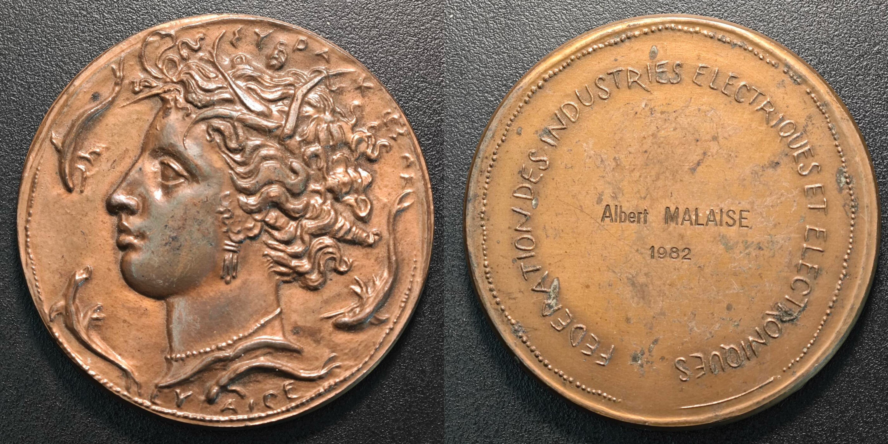
法国 · 电气和电子工业联合会 纪念铜章
Fédération des Industries Électriques et Électroniques · Albert Malaise
📜 历史背景
此为法国电气和电子工业联合会（Fédération des Industries Électriques et Électroniques，简称 FIEE）于 1982 年颁发给 Albert Malaise 的荣誉纪念章。该联合会成立于 20 世纪初，旨在代表法国电气、电子及相关制造产业的企业利益，涵盖发电设备、输配电、家用电器、通信设备、工业自动化等众多领域。1982 年正值法国工业从传统制造向电子化转型的重要阶段，该年 FIEE 頒发此章以表彰在工业技术领域做出贡献的杰出人物。
Albert Malaise 为 20 世纪比利时裔法国工程师及工业管理者，在法国电气与电子行业具有重要地位，曾长期服务于法国电力（EDF）及电气设备制造领域。此章正面为女性头像，周围环绕月桂枝叶——古典胜利与荣誉象征；反面铭刻联合会名称及获奖者姓名年份，正面与反面均署名雕刻师 F. Rice。
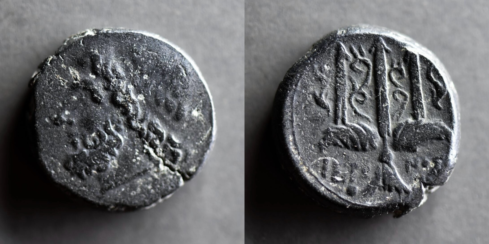
叙拉古·希伦二世 波塞冬铜币
SICILY · Syracuse · Hieron II (275-215 BC)
📜 历史背景
希伦二世（Hieron II，约 BC 275–215）是叙拉古最后一位伟大的僭主，在位近六十年，将城邦带至地中海西部的权力顶峰。他与数学家阿基米德交厚，相传阿基米德正是在为希伦二世鉴别金冠纯度的任务中发现了浮力定律，成为古代科学史上最著名的轶事之一。此币正面取海神波塞冬头像、背面以三叉戟与双海豚组合，延续叙拉古自 Deinomenid 僭主时代便以海洋主题彰显海权的传统。希伦二世币在西西里青铜币中存量相对稳定，是研究后古典时期叙拉古政治与贸易的重要实物。
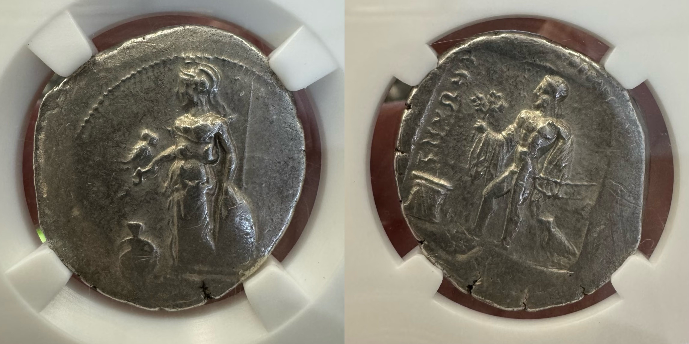
潘菲利亚·赛迪 雅典娜/阿波罗 斯塔特银币
PAMPHYLIA · Side · (400-380 BC)
📜 历史背景
赛迪（Side）位于小亚细亚南岸潘菲利亚，由小亚细亚西北部 Aeolia 地区 Kyme 城的希腊移民建城；建城后当地居民逐渐弃用希腊语、改用本地 Sidetic 语，钱币上的 Sidetic 铭文至今未被完全释读。本币正面雅典娜、反面阿波罗的双神组合，体现希腊移民以希腊神祇雅典娜与阿波罗取代安纳托利亚本土神 Kybele 与 Mên 的文化融合过程。
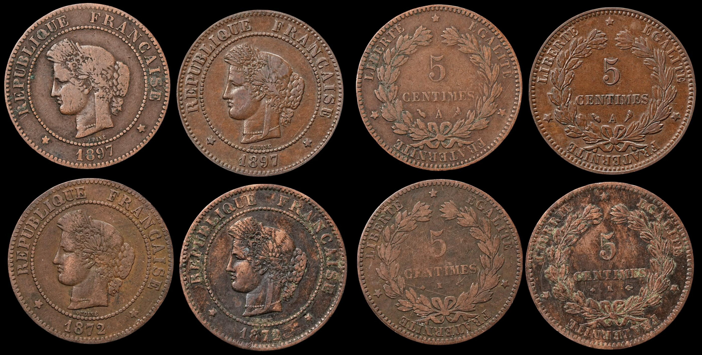
法国 谷物女神(Cérès)5分铜币一组 (1872-1897)
THIRD REPUBLIC · Cérès 5 Centimes ×4 · Paris (A)
🏛️ Lot详情
修远堂 2024-11 批量Lot,含4枚法国第三共和国Cérès 5分青铜币:2枚1897(A巴黎,Dupré小头像版)、2枚1872(A巴黎,Oudiné大头像版)。正面谷物女神Cérès左向头像佩麦穗冠,铭RÉPUBLIQUE FRANÇAISE,年款两侧★;背面5 CENTIMES,弧形LIBERTÉ ÉGALITÉ FRATERNITÉ,两侧橄榄/月桂花环,铸币厂标A(巴黎)。品相F-VF,均匀棕红包浆。该系列1871-1897流通,Oudiné大头像版(1871-1876)后由Dupré改刻小头像版(1877-1897)。
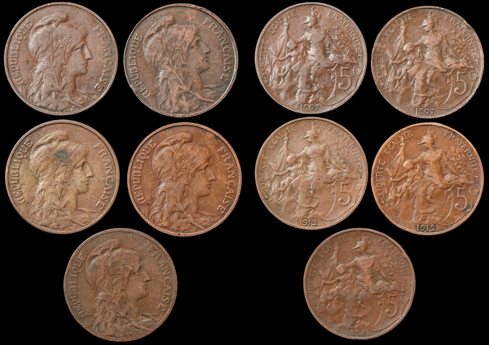
法国 撒种者(La Semeuse)5分铜币一组 (1898-1912)
THIRD REPUBLIC · La Semeuse 5 Centimes ×5 · 巴黎(A)
🏛️ Lot详情
修远堂 2024-11 批量Lot,含5枚法国第三共和国La Semeuse 5分青铜币:1枚1898(首年版)、3枚1907、1枚1912。正面为Oscar Roty设计的玛丽安娜戴弗里吉亚帽撒种者头像(La Semeuse),背面为Roty的播种女神于晨曦田野撒种,铭LIBERTÉ ÉGALITÉ FRATERNITÉ。品相F-VF区间,自然红棕包浆。该版1897年末启用、1898-1921流通,取代Dupré的Cérès谷物女神版。注:图析在正面底部读到'DANIEL·DUPUIS'签名,然标准1898-1921 5c为Roty的La Semeuse(正面Roty头像,签名O.ROTY),Dupuis头像仅用于10c/25c,该读取疑为误读,待高清特写确认;各枚背面年份旁铸币厂标字母(A/K等)亦需特写确认。
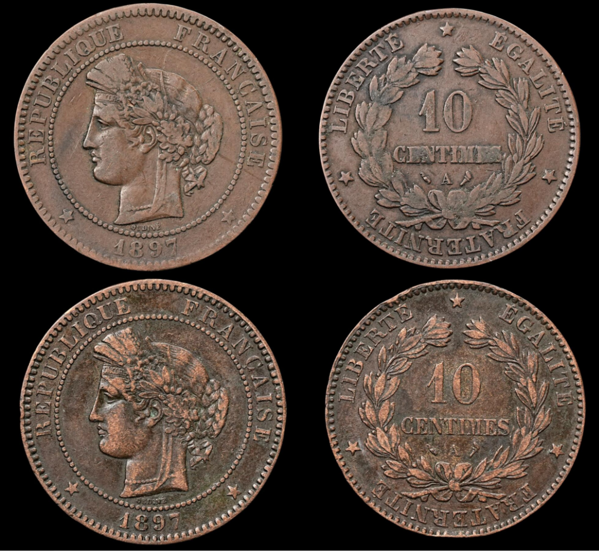
法国 谷物女神(Cérès)10分铜币一组 (1897)
THIRD REPUBLIC · Cérès 10 Centimes ×2 · Paris (A)
🏛️ Lot详情
修远堂 2024-11 批量Lot,含2枚法国第三共和国Cérès 10分青铜币:均为1897年(A巴黎,E.A. OUDINÉ版)。正面谷物女神Cérès左向头像佩麦穗冠,颈部雕刻师签名E.A. OUDINÉ,铭RÉPUBLIQUE FRANÇAISE,年款1897两侧★;背面10 CENTIMES,弧形LIBERTÉ ÉGALITÉ FRATERNITÉ,月桂/橡叶花环蝴蝶结收束,铸币厂标A(巴黎)。品相EF-AU区间,深红褐/巧克力包浆,浮雕清晰。该面值Cérès型由E.A. Oudiné设计,1871-1901流通;同期5分在小头像改刻后于1897年转Dupré版,而10分始终为Oudiné Cérès型至1901年废止,故1897年10分仍属Oudiné版式。
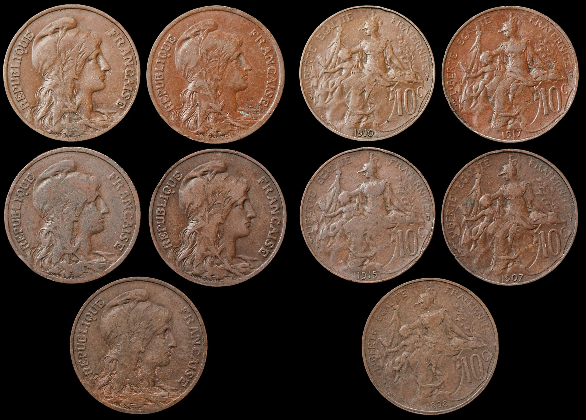
法国 谷物女神(Cérès)10分铜币一组 (1898-1917)
THIRD REPUBLIC · Cérès 10 Centimes ×5 · Paris (A)
🏛️ Lot详情
修远堂 2024-11 批量Lot，含5枚法国第三共和国 Cérès 10分青铜币：年份为 1898、1907、1910、1915、1917（A巴黎，E.A. OUDINÉ版）。正面谷物女神Cérès左向头像佩麦穗冠，颈部雕刻师签名E.A. OUDINÉ，铭RÉPUBLIQUE FRANÇAISE；背面10 CENTIMES，弧形LIBERTÉ ÉGALITÉ FRATERNITÉ，麦穗花环，铸币厂标A(巴黎)。5枚经图像识别均为Cérès/OUDINÉ型（非La Semeuse/ROTY），颈下E.A. OUDINÉ签名清晰可辨。品相中等磨损，棕红包浆，底光依稀。该面值Cérès型由E.A. Oudiné雕模，与FR-003(1897)同属Cérès系列，构成1897-1917连续年份组，是法国第三共和国青铜币研究的优质标本。
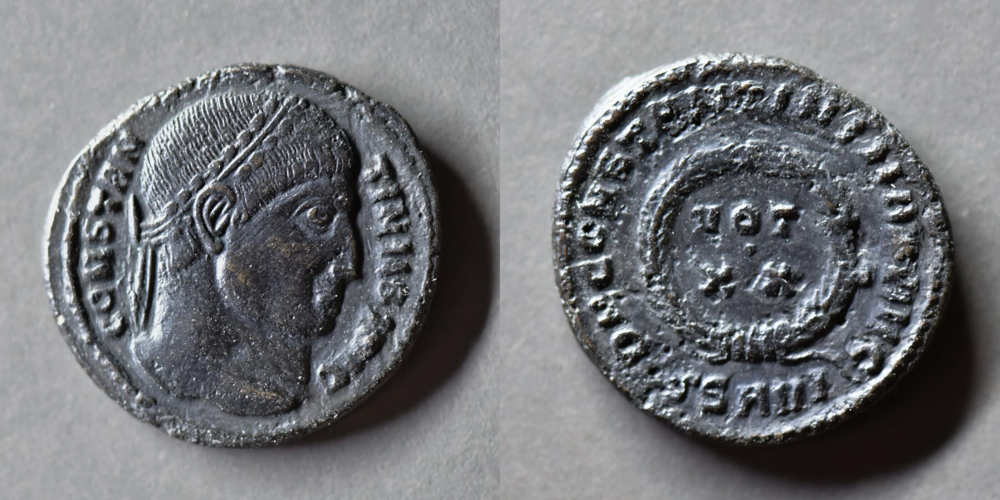
君士坦丁大帝 誓愿二十年(VOT XX)铜币
Constantine I · AD 320 · VOTIS XX
📜 历史背景
君士坦丁大帝(Constantine the Great, 约306年称帝)于306年称帝, 320年正值其统治二十年, 逐发行「VOT XX」(votis vicennalibus, 二十年还愿/誓愿)纪念币系列, 张显皇权延续与神佑。背面铭文 DN CONSTANTINI MAX AVG 中的「MAX」(Maximus, 大皇帝)头衔表明其最高统治者地位。
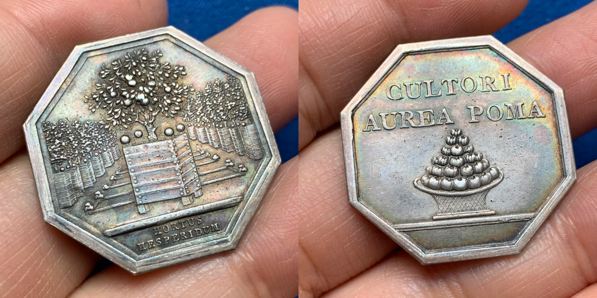
法国 · 鲁昂皇家橘园 八角银质代币
Orangerie Royale de Rouen · Jeton en Argent · F.6329 var. contour · XF
📜 历史背景
此为法国鲁昂（Rouen）皇家橘园（Orangerie Royale / Jardin des Plantes）相关的八角形银质代币(jeton)，正面铭 HORTUS HESPERIDUM（赫斯珀里得斯之园），反面铭 CULTORI AUREA POMA（致金苹果之培育者）。
赫斯珀里得斯的金苹果：在希腊神话中，赫斯珀里得斯（Hesperides）是黄昏女神赫斯珀洛斯（Hesperos）之女，她们在极西之地的神园中守护赫拉婚礼时盖亚所赠的金苹果树。金苹果由百首巨龙拉冬（Ladon）缠绕守卫，赫拉克勒斯十二伟业之第十一件便是潜入该园、盗取金苹果。这一母题长期作为「珍贵栽培之果 / 丰饶」的隐喻，被引入法国园艺、植物园及园林题材的章牌设计之中。
鲁昂皇家橘园：橘园（orangerie）是 17–18 世纪法国宫殿、城堡与大城市植物园的典型建筑——专用于冬季保护珍贵的柑橘类植物（橘树、柠檬树）。鲁昂作为诺曼底历史名城与重要港口，其植物园 / 橘园体系在 18 世纪已颇具规模；此类代币（jeton）很可能用于园方内部流转、园艺行会或学院凭证，亦作纪念性颁授之用。
版式与包浆：此币为八角形（octogonal）法国章牌式设计，正面为规整排列的橘树木箱（caisses d'orangers）沿园径排布的园林全景，反面为盛满橘子的柳条筐（corbeille）。币面呈现极为漂亮的自然彩虹包浆（irisation），蓝紫金粉交织，是 18–19 世纪法国银质章牌长期窖藏或佩戴后形成的典型氧化层，亦是真伪与年代的重要佐证。参考编号 F.6329 var. contour 表明其属 Feuardent 法国币章目录体系中的一种版式变体（contour 指轮廓 / 边饰变体）。
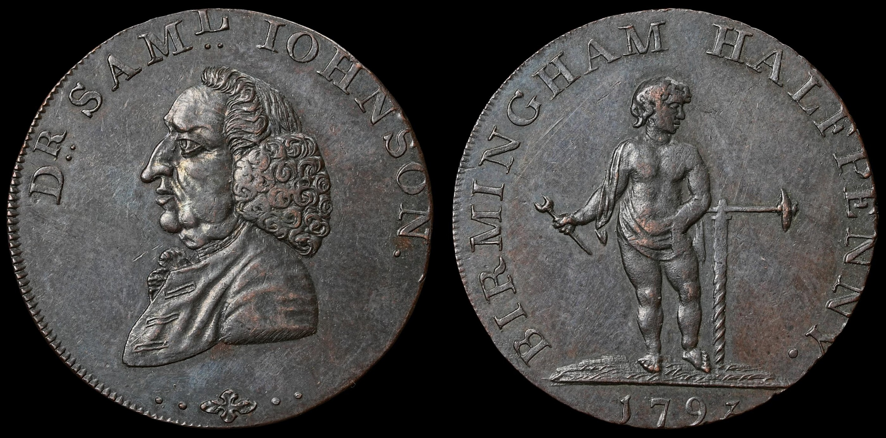
英国·伯明翰 Kempson 塞缪尔·约翰逊 1/2便士代用币
GREAT BRITAIN · Birmingham · Kempson 1793 Series
📜 历史背景
Conder Token 是18世纪末英国因皇家铸币局小面额铜币严重匮乏，由各地工商城镇与私商自发代铸的民间代用币（1787-1797为黄金期），得名于James Conder 1798年所著《An Arrangement of Provincial Coins, Tokens, and Medalets》。此枚由伯明翰雕模师Peter Kempson刻版，发行方为伯明翰摩尔街（Moore Street）酒馆店主Henry Biggs，酒馆以约翰逊博士命名。正面以文学泰斗Samuel Johnson（1709-1784）胸像致敬启蒙时代智识，背面为手持扳手的少年工匠形象，身侧立有锻造锤与铁砧，象征伯明翰作为英国工业重镇的五金、冶金制造业属性，点明代币发行地伯明翰的手工业产业底色。此币因初代代币大量回流兑付，发行方曾修改过币缘边刻文字，是钱币史上较早调整兑付铭文的经典案例。
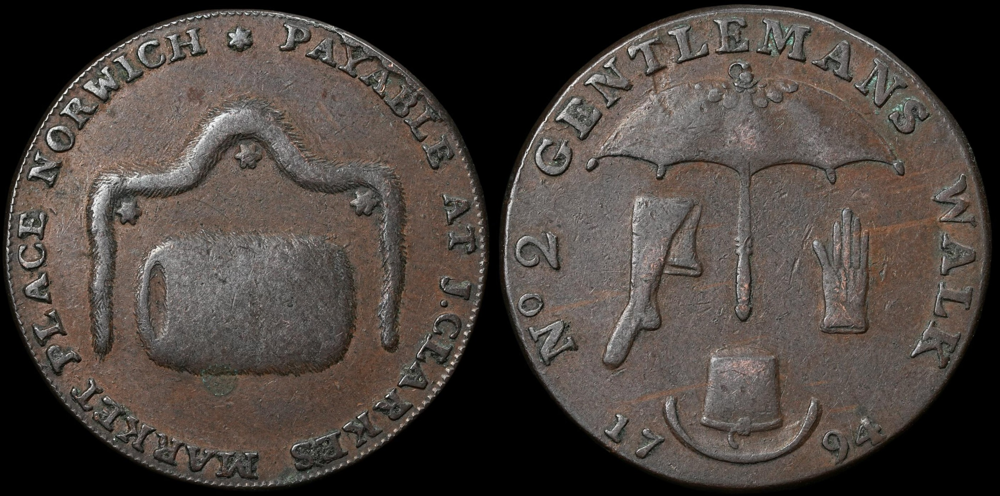
英国·诺维奇 J. Clarke 服饰店 1/2便士代用币
GREAT BRITAIN · Norwich · J. Clarke 1794 · D&H Norfolk 22
📜 历史背景
Conder Token 是18世纪末英国因皇家铸币局小面额铜币严重匮乏，由各地工商城镇与私商自发代铸的民间代用币（1787-1797为黄金期），得名于James Conder 1798年所著《An Arrangement of Provincial Coins, Tokens, and Medalets》。此枚由诺维奇（Norwich）服饰商户Joseph Clarke发行，正面铭PAYABLE AT J. CLARKES MARKET PLACE NORWICH（可在诺里奇市集广场J. Clarke店铺兑付），图案为女士毛皮手暖筒（Muff）与毛皮长围脖（Tippet），点缀三颗五角星，是18世纪典型高档穿戴配饰；反面铭NO 2 GENTLEMANS WALK 1794（绅士步行街2号），图案为遮阳伞、长筒丝袜、单片礼仪皮手套、礼帽——全套男士服饰。正反面分别展示女/男服饰，直白体现该店同时经营男女成衣配饰，是当时商户代币非常有代表性的广告式铸币思路。
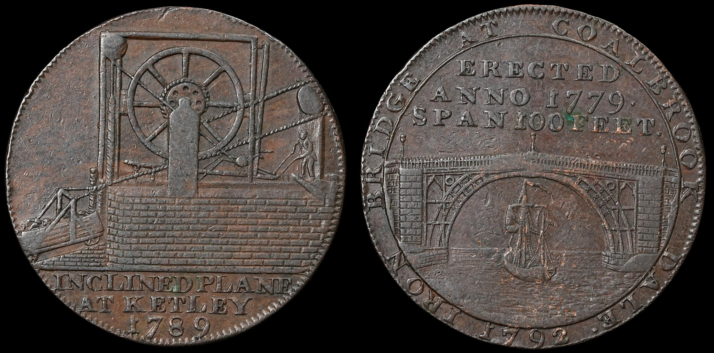
英国·什罗普郡 Coalbrookdale 铁桥 1/2便士代用币
GREAT BRITAIN · Shropshire · Coalbrookdale Iron Bridge · 1792
📜 历史背景
正面图案是科尔布鲁克代尔（Coalbrookdale）的铁桥（Iron Bridge），于1779年建成，跨度为100英尺。科尔布鲁克代尔铁桥是世界上第一座铸铁桥，具有重要历史意义。它位于英国什罗普郡，标志着工业革命时期建筑技术的重大突破，开启了铁作为主要建筑材料的新时代，在工程和建筑史上具有里程碑地位。 背面图案是位于凯特利（Ketley）的斜面装置（Inclined Plane），年份为1789年。斜面在工业革命时期是重要的运输设施，用于在不同高度之间搬运重物，常应用于矿山、运河等场景，通过机械装置辅助，可利用重力或少量人力完成货物升降运输，提高运输效率。 "18世纪英国的工业革命给人类历史带来巨大变革。机器的发明和运用将人力、畜力从生产中解放出来，大规模的工厂生产取代了传统的手工生产，并由此推动了资本、劳工和管理的系统化和合理化应用。影响着人们日常生活的除了抽水马桶、蒸汽机车和轮船，还有一枚枚小巧精美的代用币。代用币(token)和法定货币的硬币(legaltendercoin)最大的不同是：代用币通常由非官方的团体、组织和个人发行，流通和使用范围有限，发行量较小；法定货币则由政府机构发行，可自由兑换商品。代用币的种类繁多，用途各不相同，工业革命时期英国商人和企业发行，用于日常交易的称为贸易代用币(trade token)。" ——《英国工业革命时代的代用币》，张亚威
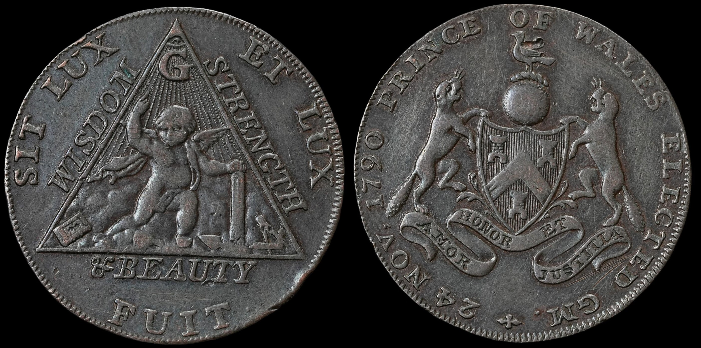
英国·米德尔塞克斯郡 共济会威尔士亲王当选纪念 1/2便士代用币
GREAT BRITAIN · Middlesex · Masonic Prince of Wales Token · D&H 372
📜 历史背景
这是米德尔塞克斯郡发行、纪念威尔士亲王就任共济会总会长 GM 的铜质半便士代币，属于 18 世纪经典共济会主题康德私铸代币，非英国皇家法定货币。 左侧面（正面・共济会象征面） 核心图案与铭文 外环拉丁文环绕：SIT LUX ET LUX 直译：愿有光，且光常在，是共济会标志性开篇格言，象征启蒙、真理与光明。 三角形徽记（共济会核心符号） 三角内大写字母 G：代表 God（上帝）/Geometry（几何），是共济会最经典标识； 三角两条斜边分别刻字： WISDOM = 智慧 STRENGTH = 力量 三角底部横边下方：& BEAUTY = 美 三者合为共济会三大核心基石：智慧、力量、美。 三角中央带翼丘比特（小天使） 手持方矩（木匠直角尺）与铅垂线，二者是石匠共济会经典工具符号；天使寓意神圣启蒙。 最下方铭文 FUIT，拉丁语意为 "已然成就、已然显现"，呼应光明启世的理念。 右侧面（背面・纪念纪事面） 外圈文字完整释读 PRINCE OF WALES ELECTED GM. 24 NOV 1790 逐句翻译： 威尔士亲王，于 1790 年 11 月 24 日当选共济会总会长（Grand Master，缩写 GM）。 这是此币铸造发行的核心历史事由：纪念日后的英国国王乔治四世（当时身份为王储威尔士亲王）就任英格兰共济会最高总会长。 盾徽与纹章体系 盾徽两侧：两只立姿狐形护兽扶盾； 盾顶圆球上停栖一只渡鸦 / 信鸽； 盾下绶带拉丁格言 AMOR HONOR ET JUSTITIA 翻译：仁爱、荣誉与正义，是该共济会分会的信条。 基础收藏与背景信息 面值：名义 Halfpenny 半便士，属于地方流通代用币，仅在共济会圈层与本地商户间兑付流通； 目录编号：标准 D&H（Davis & Hakes）编号 Middlesex 372，是康德代币里知名度很高的共济会题材名品； 历史背景：1790 年威尔士亲王乔治正式出任英格兰共济会总导师，共济会体系专门发行这款代币作纪念与社群内部流通； 材质：红铜，你这枚币包浆醇厚，图案底板磨损适中，属于品相完好的流通老品。 补充小知识 乔治四世（威尔士亲王）长期深度参与英国共济会事务，是近代英国王室与共济会关联最具代表性的人物，这枚代币也是研究 18 世纪英国王室、共济会、民间代币经济三者交织的实物史料。
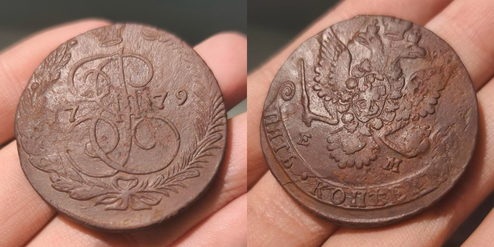
沙俄·叶卡捷琳娜二世 5戈比铜币
RUSSIA · Catherine II the Great · 5 Kopecks
📜 历史背景
沙俄女皇叶卡捷琳娜二世（凯瑟琳大帝）在位时期铸造的 5 戈比（5 КОПЕЕК）大型流通铜币，属于沙俄最经典的重型铜元品种之一。 左侧币面（正面） 中心花押字：交织花体缩写 Е II，是俄语 Екатерина II（叶卡捷琳娜二世）的皇家专属纹章花押。 年份：币面可见「1779」，代表铸造年份为1779 年。 环绕纹饰：左右两侧为棕榈枝叶花环，底部蝴蝶结束带，是该版 5 戈比固定边框设计。 右侧币面（背面） 主体国徽：俄罗斯帝国双头鹰国徽，鹰头戴皇冠，胸口盾徽标注莫斯科公国纹章，一爪持权杖、一爪持王权宝球，是沙俄核心国家象征。 竖排俄语文字：ПЯТЬ КОПЕЕК，直译就是五戈比，标明面值。 造币厂标识 EM： ЕМ（EM） = 叶卡捷琳堡造币厂（Екатеринбургский Монетный Двор），沙俄当时最主要的铜币生产基地，绝大多数该年份 5 戈比均出自此厂。 基础收藏与背景信息 1. 发行背景 叶卡捷琳娜二世时代俄国货币体系中，5 戈比属于大面额日常铜币，单枚重量普遍在 50 克上下，尺寸大、用料厚重，多用于大额日常贸易、赋税缴纳。 2. 材质与规格 材质：纯红铜 典型重量：约 50g，直径 40mm 左右，是一眼辨识度极高的沙俄大钱。 3. 版别与存世 EM 厂 1779 年 5 戈比属于常规流通版，存世量适中；原味老包浆、无大裂无修补的流通品相是东欧钱币收藏热门入门品种。
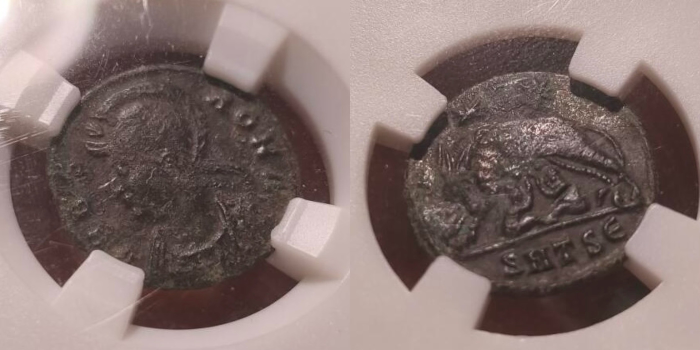
古罗马·君士坦丁大帝 VRBS ROMA 建城母狼育婴纪念币
ROMAN EMPIRE · Constantine I · VRBS ROMA · Thessalonica
📜 历史背景
这是公元 330–333 年，罗马帝国君士坦丁大帝时期，萨洛尼卡造币厂发行的 VRBS ROMA 罗马建城纪念青铜小铜币（AE4/Follis），为纪念迁都君士坦丁堡、致敬罗马母邦经典题材古币，已装入评级保护盒封装。 左侧（正面） 铭文：VRBS ROMA，拉丁语直译「罗马之城」。 主图案：头戴头盔、身披铠甲的罗马城拟人女神罗玛（Roma）左侧胸像，是罗马城邦的人格化象征。 右侧（背面） 核心经典纹样：母狼哺双婴 罗马立国神话核心符号：一头母狼哺育罗慕路斯（Romulus）与雷穆斯（Remus）双胞胎兄弟。 传说二人是罗马城的创立者，这一图案是古罗马钱币最具辨识度的国宝级经典标识；狼头上方原本铸有两颗五角星，象征罗马帝国东西两部分。 币底纪年 / 造币厂标记 SMTS E SMTS = Sacra Moneta Thessalonica，即萨洛尼卡（今希腊塞萨洛尼基）皇家造币厂； 末尾字母E代表该厂第五作坊（Officina E）。 发行历史背景 发行帝王：君士坦丁一世（君士坦丁大帝），公元 307–337 年在位。 发行目的：公元 330 年大帝正式迁都拜占庭，改名君士坦丁堡（新罗马）；铸造该系列代币，一面致敬旧都罗马的起源神话，一面彰显帝国新旧都城传承。 发行量：该版属于帝国大范围流通的小额找零铜币，存世量适中，是入门级古罗马钱币里最热门的经典品种。
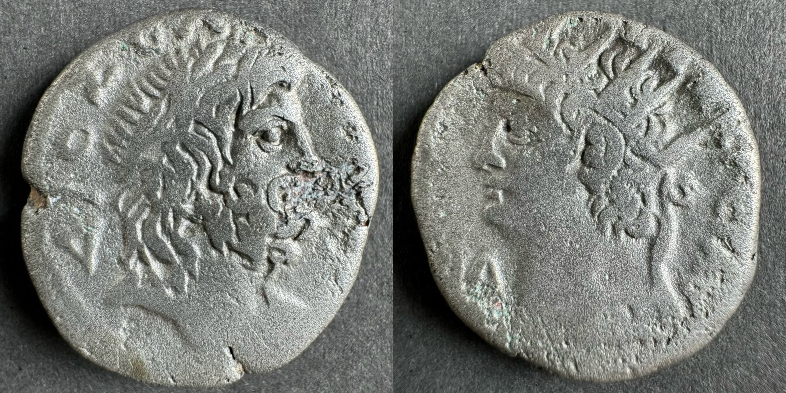
古罗马·尼禄 埃及行省亚历山大里亚 四德拉克马银币
ROMAN EMPIRE · Nero · Egypt · Alexandria · Tetradrachm
📜 历史背景
尼禄时期（AD 54-68）埃及行省亚历山大里亚造币厂发行的四德拉克马银币。尼禄是罗马帝国朱里亚·克劳狄王朝的最后一位皇帝，以其奢华生活和艺术追求著称，也是历史上最具争议的罗马皇帝之一。埃及行省作为帝国的粮仓，其亚历山大里亚造币厂长期保持独特的希腊化币制，发行的四德拉克马银币延续托勒密传统，正面为皇帝肖像，背面为希腊神祇，是罗马行省币中的精品。
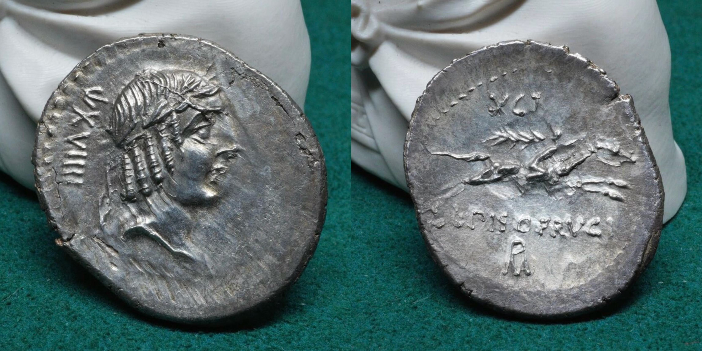
古罗马共和·L. Calpurnius Piso Frugi 阿波罗与骑士 第纳里银币
ROMAN REPUBLIC · L. Calpurnius Piso Frugi · AR Denarius · Apollo / Horseman · BC 90
📜 历史背景
古罗马共和时期（BC 90）由 L. Calpurnius Piso Frugi 铸造的第纳里银币（AR Denarius）。L. Calpurnius Piso 出身于卡尔普尔尼乌斯·皮索氏族（gens Calpurnia），这是罗马一个古老而显贵的平民家族，于公元前 3 世纪出现在历史舞台。该家族首位执政官为公元前 180 年的 Gaius Calpurnius Piso，此后皮索家族（the Pisones）成为罗马国家最显赫的家族之一，产生了众多执政官与高级官员，并推动了两项重要立法——公元前 149 年的 lex Calpurnia 与公元前 67 年的 lex Acilia Calpurnia。正面阿波罗头像反映罗马对希腊神祇的崇敬，反面骑士持棕榈枝奔马的形象象征军事荣耀与凯旋，是罗马共和晚期钱币艺术的典型代表。L. Calpurnius Piso Frugi 的德纳里系列以"控制标记"（control marks, 罗马字母/数字组合）区分数十种模具变体，是共和钱币收藏的热门专题。
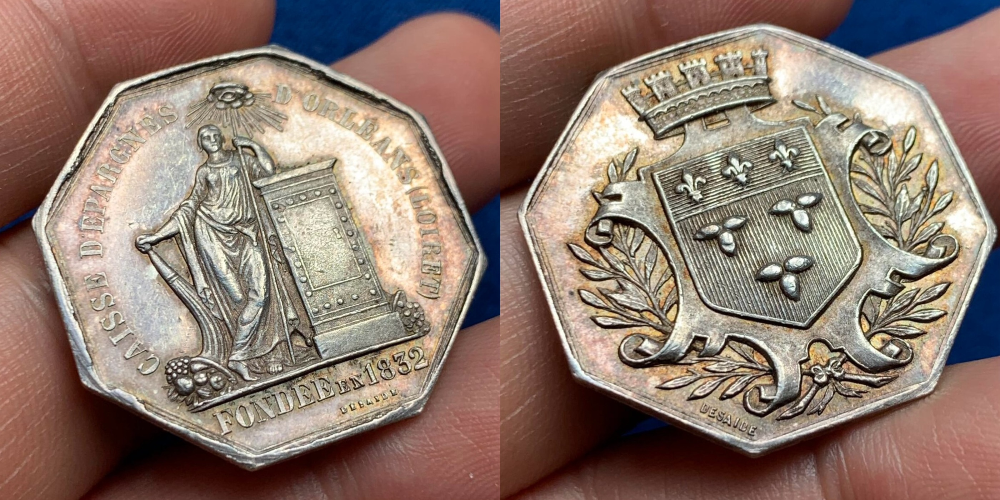
法国·奥尔良卢瓦雷省储蓄银行 八角银质代币
FRANCE · Orléans · Loiret · Caisse d'Epargnes · 1832
📜 历史背景
1832年法国奥尔良卢瓦雷省储蓄银行发行的八角银质代币。七月王朝时期，法国各地储蓄银行（Caisse d'Epargne）兴起，这类代币既是银行内部流通的凭证，也是宣传储蓄理念的工具。正面为储蓄女神形象，手持钥匙，身旁是象征安全的保险箱，铭文标注银行名称与创立年份；反面为奥尔良城市盾徽，百合花与蜜蜂图案，上方城堡冠，蜜蜂银标（Tête de Minerve）表明银含量符合法国标准。雕刻师 DEPAULIS 和 DESAIDE 均为当时著名的章牌艺术家。
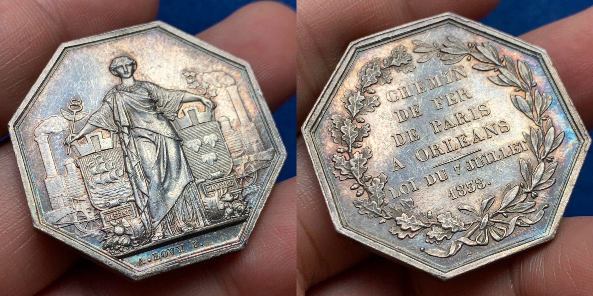
法国·巴黎-奥尔良铁路通行纪念 八角银质代币
FRANCE · Chemin de Fer de Paris à Orléans · 1838
📜 历史背景
1838年巴黎至奥尔良铁路通行纪念八角银质代币。1838年7月7日，法国政府正式通过法案授权修建巴黎至奥尔良铁路，这是法国铁路史上的重要里程碑。巴黎-奥尔良铁路公司是法国最早成立的铁路公司之一，该铁路干线连接法国首都与中部重要城市奥尔良，对法国工业化进程具有重要意义。正面为铁路女神形象，手持钥匙，背景是蒸汽火车头，象征铁路时代的到来；反面铭文记录了铁路名称与立法日期，橡树与橄榄枝花环象征力量与和平。

法国·布尔日行政区公证人协会 八角银章
FRANCE · Notaires de l'Arrondissement de Bourges (Cher) · Octagonal Silver Medal · c. 1870-1880s
📜 历史背景
法国19世纪布尔日行政区（Bourges, Cher省）公证人协会发行的八角形银质会章（jeton de notaire），雕刻师为 Alphonse Borrel（阿尔方斯·博雷尔, 1836–1914），活跃于19世纪中后期。法国公证人（Notaire）是法定公职，负责认证契约、遗嘱、不动产交易等；各地公证人协会（Chambre des Notaires）常定制此类银章作为行业身份标志。正面以新古典主义寓言形象（法律/正义）坐像象征司法权威，刻有 ART. I/II/III/IV 代表《民法典》条款；反面明确标识行业归属与行政区划，橡树叶花环象征法律之常青与公正之坚固。八角形制为法国19世纪行业章币（Jeton/Méreau）的典型形制，区别于圆形的流通纪念币，专用于行业内部流通、会议、礼仪或文件封印。品相为 UNC 粉光（mint state with peach/rainbow luster），是19世纪法国小章币的典型高品相特征。
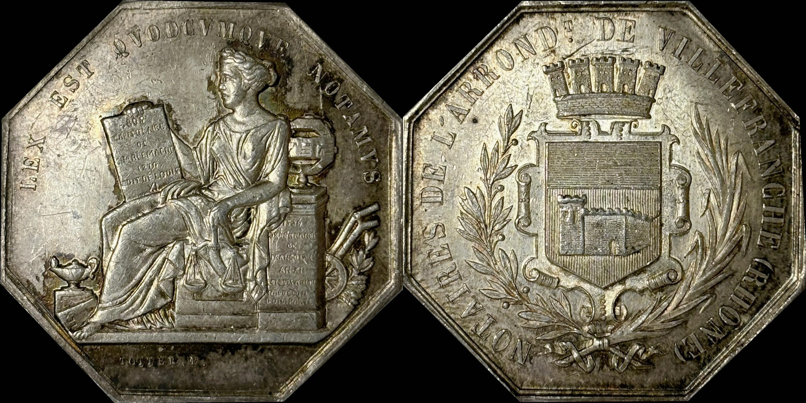
法国·维勒弗朗什行政区公证人公会 八角银章
FRANCE · Chambre des Notaires de l'Arrondissement de Villefranche (Rhône) · Octagonal Silver Medal · c. 1840-1860s
📜 历史背景
法国19世纪罗讷省（Rhône）维勒弗朗什行政区（Arrondissement de Villefranche-sur-Saône）公证人公会（Chambre des Notaires）发行的八角形银质会章（jeton de notaire），雕刻师为 Louis-Charles Rottier（路易-夏尔·罗蒂埃, 1807-1884），巴黎造币厂首席雕刻师之一。正面以新古典主义寓言形象（正义女神/Justitia）坐像，旁置天平（公正衡量）、束棒（司法权威）、油灯（警惕 vigilance），手扶刻有"1804 CODE CIVIL DES FRANÇAIS / 1807 DIT DE LOUIS / ORDONNANCE DE FRANÇOIS I[ER] LOUIS XVIII NAPOLÉON BONAPARTE"的石碑，记录从《法国民法典》颁布到波旁复辟的法律沿革。外环拉丁铭文 LEX EST QVODCVMQVE NOTAMVS（法即我们之所铭记）。反面为维勒弗朗什城市纹章（城墙冠mural crown + 城堡三塔楼盾徽，象征中世纪城邦自治），外环铭文 CHAMBRE DES NOTAIRES DE L'ARRONDᴛ DE VILLEFRANCHE (RHÔNE)，月桂/橄榄枝花环绕。法国公证人（Notaire）是法定公职，负责不动产交易、遗嘱认证等，各地公证人公会常定制此类银章作为行业身份标志。八角形制为19世纪法国行业会章（Jeton de Notaire）的典型形制。品相为 AU-UNC 银质粉光/淡彩包浆（cartwheel luster），高点锐利，八角锋利。

拿破仑意大利王国·5里拉银币 米兰版
KINGDOM OF ITALY · Napoleon I · 5 Lire · Milano Mint
📜 历史背景
1809年拿破仑意大利王国5里拉银币，米兰造币厂（M版）。1805年，拿破仑加冕为意大利国王，建立了法兰西第一帝国的附属王国——意大利王国。该币正面为拿破仑侧面像，铭文称其为'皇帝与国王'；反面为意大利王国纹章，鹰徽上方皇冠，面值5里拉。米兰造币厂（Milano）是当时意大利王国的主要造币厂之一，所铸银币工艺精湛。NGC-XF评级，品相优良。
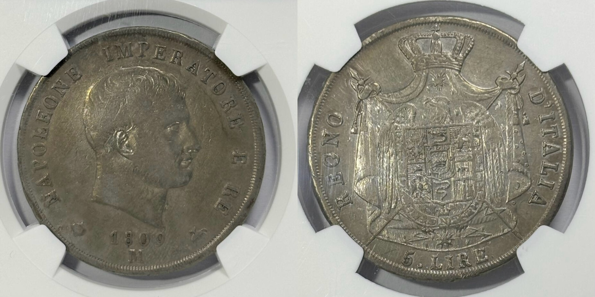
西西里岛·阿克拉加斯城 螃蟹/鹰铜币
SICILY · Akragas · Tetradrachm · BC 415-406
📜 历史背景
公元前415-406年阿克拉加斯（今意大利阿格里真托）铸造的四阿斯铜币。此币铸造于阿克拉加斯的古典时期鼎盛阶段，此时该城作为西西里岛的希腊殖民强邦，正处于与迦太基及叙拉古等势力的复杂博弈中。正面鹰撕扯野兔的场景极具冲击力：鹰在希腊文化中是宙斯的圣鸟，象征力量与王权，野兔则可能代表猎物或被征服的对手，整体图案既展现自然法则中的强者逻辑，也暗喻城邦的军事威慑力。背面螃蟹与海马的组合则与阿克拉加斯的地理环境密切相关——螃蟹可能源自当地沿海生态的具象化，海马作为海洋生物，呼应城邦濒临地中海的区位特征，二者共同构成陆地-海洋的地域符号；上方小圆点是明确的价值标记，表明其货币单位，用于规范交易尺度。